Este libro explica el backgammon, desde cero y paso a paso, a quien nunca lo ha jugado. Tiene seis capítulos: introducción al juego, el tablero y la preparación, las reglas, cómo jugar mejor, cómo usar Fichas y Dados, y un capítulo de consulta. Si los lees en orden, al final podrás jugar tu primer juego respetando las reglas; si ya conoces el backgammon, puedes ir directamente al capítulo 3 o al 4.
¿Cómo leer las imágenes? Las imágenes están tomadas de Fichas y Dados y muestran el tablero tal como aparece en el juego. Tú estás abajo: las fichas de color crema son tuyas, y las marrón oscuro, de tu rival. Tu tablero interior está abajo a la derecha, y las fichas que sacas van a la bandeja verde situada a la derecha del tablero. Los números de las puntas, las flechas y los marcos de color se han añadido después a las imágenes; el tablero de la aplicación no lleva números. Los números están escritos siempre desde tu punto de vista: la 1 es la punta situada más a la derecha de tu tablero interior, y la 24, la situada más a la derecha del tablero interior del rival. Las flechas muestran adónde va cada ficha, y el número pequeño de cada flecha, con qué dado se ha movido; los dados del tablero son los números que salieron en ese turno.
Dos conjuntos de reglas. Fichas y Dados admite tanto las reglas internacionales (con cubo doblador) como las reglas habituales del tavla turco. Las reglas básicas son las mismas en ambos casos; las diferencias se indican aparte en los apartados correspondientes, y el capítulo 2 incluye además una tabla comparativa (Tabla 2.1).
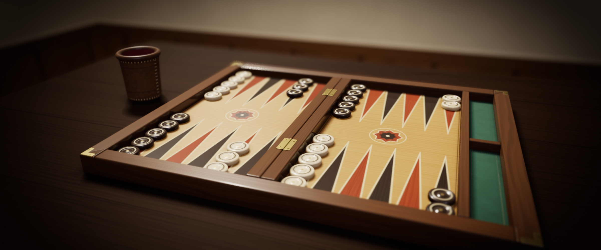
Capítulo 1
Primeros pasos
Este capítulo es para quienes nunca han jugado al backgammon: un inicio rápido en siete claves, una breve historia del juego y de sus parientes, el objetivo del juego y el material necesario.
1.1 Inicio rápido
Si quieres entender el juego enseguida, sin entrar en detalles, te bastan estas siete claves. Cada una se explica a fondo en los capítulos siguientes.
Objetivo: Lleva tus 15 fichas alrededor del tablero hasta tu tablero interior, abajo a la derecha, y después sácalas del tablero. Gana quien termina primero.
Turno: En cada turno tiras dos dados. Cada dado indica cuántas puntas avanza una ficha. Si sale el mismo número en los dos (dobles), haces cuatro jugadas.
Sentido: Tus fichas avanzan siempre hacia los números más bajos, en dirección a tu tablero interior. No se puede retroceder.
Dónde puede caer una ficha: En una punta vacía, junto a tus propias fichas o encima de una ficha solitaria del rival. No puede caer en una punta con dos o más fichas del rival (un punto).
Comer: Si caes sobre una ficha solitaria del rival, te la comes y va a la barra, en el centro del tablero. Si te comen una ficha, cuando te toque lo primero que debes hacer es entrarla en el tablero interior del rival; mientras tengas una ficha esperando en la barra, no puedes mover ninguna otra.
Obligación: Tienes que jugar los dados que se puedan jugar; si no caben los dos, juegas el mayor.
Sacar fichas: Cuando todas tus fichas están en tu tablero interior, empiezas a sacar fichas de la punta que indica cada dado. Si terminas antes de que el rival haya sacado ninguna ficha, ganas un gammon y te anotas 2 puntos.
1.2 Breve historia del backgammon
El backgammon pertenece a una de las familias de juegos más antiguas que todavía se juegan. Los juegos de carreras con dados y fichas, en los que las fichas compiten por llegar al final de un recorrido, se conocen desde hace unos 5000 años; las reglas actuales, en cambio, se fueron asentando poco a poco a lo largo de los siglos, en un viaje que va de Mesopotamia a Roma y de Irán a los cafés otomanos.
Las primeras huellas. Los rastros de los juegos de carreras guiados por dados se remontan a los asentamientos más antiguos que se conocen. En las excavaciones de Shahr-e Sukhteh, en el sureste de Irán, salió a la luz un juego de mesa de hace unos cinco mil años: un tablero cuyo recorrido dibuja las curvas de una serpiente, un par de dados y unas piezas talladas en ágata y turquesa, sesenta según los informes. Cómo se jugaba y qué relación tiene con el backgammon son cuestiones discutidas. En Mesopotamia, en las tumbas reales de la ciudad de Ur, también apareció un tablero de un juego de carreras de una antigüedad parecida; como sus reglas se han podido descifrar en parte gracias a una tablilla cuneiforme, el juego de Ur se considera el juego de mesa más antiguo cuyas reglas se conocen. Estos juegos son parientes lejanos del backgammon, no sus antepasados directos.
El nard persa. El antepasado más cercano que se conoce del backgammon actual es el nard (nerd), que se jugaba en el Irán sasánida; su aparición se sitúa entre los siglos III y VI d. C. Según la etimología más aceptada, hasta su nombre rinde homenaje a un soberano: se cree que la palabra nard es la forma abreviada de nēv-ardashīr, que significa «el valiente Ardashir», y que alude a Ardashir I, fundador de la dinastía. La historia favorita, sin embargo, atribuye su invención a Bozorgmehr, el sabio visir de Cosroes I: cuando llegó el ajedrez desde la India, el visir descifró el juego y, a cambio, ideó el nard y lo envió a la India, cuyos sabios no lograron descifrarlo. El tratado en persa medio del que procede este relato describe el juego como un modelo del universo: el tablero es la tierra; las treinta fichas, las noches y los días del mes; los dos dados, el día y la noche, y las caras opuestas de los dados, que suman siete, los planetas. El Shahnameh de Ferdousí también narra esta historia.
La tabula en Roma y Bizancio. Los romanos tenían un juego de carreras que se jugaba sobre tres filas de casillas y se llamaba «juego de las doce líneas» (ludus duodecim scriptorum). Con el tiempo desapareció la fila central; quedó un tablero de 24 casillas en total, 12 a cada lado, y el juego pasó a llamarse tabula. Cada jugador tenía 15 fichas. Se dice que el emperador Claudio era muy aficionado al juego y que incluso escribió un libro sobre él. Hoy conocemos sus reglas, en gran parte, gracias a un poema que narra una mano que el emperador bizantino Zenón (476–491) perdió por culpa de los dados. Las principales diferencias entre la tabula y el backgammon actual son que se jugaba con tres dados y que no había una barra donde esperaran las fichas comidas. La palabra «tavla» procede de esa misma raíz: el latín tabula («tabla», «mesa») dio «tavli» en el griego bizantino, y de ahí pasó al turco.
El nard en el mundo islámico. Nacido en Irán, el nard se extendió con el mismo nombre por el mundo árabe y durante siglos fue el juego de los cafés y los caravasares. En turco otomano también se usaba la palabra «nerd» para designar el juego. La huella más viva de este pasado común está en los nombres de los dados: nombres a medio camino entre el persa y el turco, como «düşeş», «şeşbeş» y «hepyek», se pronuncian igual desde los Balcanes hasta el mundo árabe; en el Líbano y en Israel, incluso al propio juego se le llama «şeş beş». Los tableros de backgammon con incrustaciones de nácar de Damasco gozan de fama en toda la región desde el siglo XIX.
Europa y el «backgammon». Durante la Edad Media, los juegos de esta familia se jugaron por toda Europa; los ingleses los llamaban en conjunto «tables». El juego fue unas veces prohibido y otras apreciado en las cortes; el libro de juegos de Alfonso X, rey de Castilla, fechado en 1283, recoge con ilustraciones las reglas de varias de sus variantes. El nombre «backgammon» apareció en Inglaterra a mediados del siglo XVII; su testimonio más antiguo que se conoce es una carta de 1647. Detalles como que la ficha comida espere en la barra central, o la puntuación actual del gammon y del backgammon, ya estaban asentados, según los reglamentos de la época, a más tardar en 1850.
Los otomanos y el café. El tavla se instaló en la vida cotidiana turca de la mano de los cafés. Los primeros cafés de Estambul abrieron en Tahtakale en la década de 1550 y pronto se extendieron por todos los barrios. Peçevi, cronista de la época, cuenta que, de quienes se reunían en aquellos nuevos locales, unos leían libros y otros jugaban al tavla o al ajedrez; Evliya Çelebi, por su parte, contabiliza cientos de cafés en el Estambul del siglo XVII. En el vasto territorio que gobernaron los otomanos, el backgammon pasó a ser parte inseparable de esta cultura del café, y siguió en su sitio cuando el imperio se retiró. Esta herencia de los cafés, junto con las tradiciones de juego bizantina, iraní y árabe, es un factor importante para que hoy el backgammon se considere casi un juego nacional en países como Turquía, Grecia, Chipre, Egipto y el Líbano.
La época moderna. El cubo doblador, que surgió en la década de 1920 en los clubes de juego de Nueva York, llevó el juego a otro nivel al añadirle el cálculo de probabilidades y la gestión del riesgo. El backgammon volvió a ponerse de moda en la década de 1960: el primer campeonato del mundo se celebró en Las Vegas en 1967, y desde 1979 el campeonato se disputa en Montecarlo. La informática también entró pronto en esta historia: en 1979, un programa llamado BKG 9.8 venció en una partida a Luigi Villa, entonces campeón del mundo; hasta su creador reconoció que los dados habían favorecido al programa. En la década de 1990, TD-Gammon, que aprendía jugando contra sí mismo, alcanzó el nivel de los jugadores expertos; hoy, todas las fases del juego, desde las jugadas de apertura hasta las decisiones del cubo, se han reescrito a partir de los análisis de estos programas. La Federación Mundial de Backgammon, fundada en 2018, es una de las principales organizaciones que intentan armonizar las reglas de los torneos internacionales; en Turquía también hay asociaciones que organizan torneos con cubo doblador. Hoy el backgammon llega a millones de jugadores gracias a las plataformas en línea y a las aplicaciones para móviles.
Tabla 1.1 Cronología del backgammon
Época
Acontecimiento
c. 3000 a. C.
Tablero de juego con dos dados y 60 piezas en Shahr-e Sukhteh
c. 2600 a. C.
Juego de Ur, Mesopotamia
Siglos III–VI d. C.
El nard en el Irán sasánida; la leyenda de Bozorgmehr
476–491 d. C.
Reinado de Zenón; la tabula en Bizancio
1283
Variantes del juego en el libro de juegos de Alfonso X
Década de 1550
Primeros cafés en Estambul; el tavla se convierte en juego de café
1647
Primer uso conocido del nombre «backgammon»
Hasta 1850
La regla de la barra y la puntuación actual ya están asentadas, a más tardar, en esta fecha
Década de 1920
El cubo doblador, en Nueva York
1967
Primer campeonato del mundo, en Las Vegas
1979
BKG 9.8 vence al campeón del mundo
Década de 1990
TD-Gammon: la inteligencia artificial alcanza el nivel de los expertos
2018
Se funda la Federación Mundial de Backgammon, que empieza a armonizar las reglas de los torneos
Nota: La historia de que Bozorgmehr inventó el juego y la interpretación del tablero como símbolo del universo proceden de textos de época sasánida; los historiadores las consideran leyendas. Lo que sí es seguro es que el juego tomó forma en Irán en esa época y que desde allí se difundió.
1.3 Otras variantes del backgammon
Este libro explica el backgammon clásico, el más jugado hoy en el mundo. Pero el tablero de backgammon no sirve para un solo juego: de Turquía al Cáucaso y de Grecia a Siria, sobre las mismas 24 puntas se juegan decenas de juegos distintos. Se dividen en tres familias:
Juegos en los que se come: La ficha solitaria del rival se come y se envía a la barra. El backgammon clásico y el portes griego pertenecen a esta familia.
Juegos en los que se aprisiona: En lugar de comerla, te colocas encima de la ficha solitaria del rival y la inmovilizas. El mahbusa, el tapa y el plakoto pertenecen a esta familia.
Carreras sin comer: No se come ni se aprisiona; una sola ficha basta para ocupar una punta, y los dos bandos suelen recorrer el tablero en el mismo sentido. El gülbahar, el mültezim, el fevga y el uzun nard pertenecen a esta familia.
Estos son los principales que puedes encontrarte en la mesa:
Mahbusa («tavla de la cárcel»): En los Balcanes se conoce como tapa, y en Grecia, como plakoto. Si colocas una ficha encima de una ficha solitaria del rival, la aprisionas: la ficha de debajo no puede moverse hasta que tú te quites de encima. Una ficha que aprisiona a otra, en cambio, no puede ser aprisionada. En la disposición más habitual, las 15 fichas de cada jugador salen de la punta 1 del rival. Es un juego lento y posicional: una sola ficha aprisionada al principio puede decidir todo el juego. No se usan ni el cubo doblador ni el backgammon (la victoria triple).
Gülbahar: Su nombre internacional es gul bara. Una sola ficha en una punta basta para que el rival no pueda caer en ella. Las fichas de los dos bandos salen de esquinas opuestas en diagonal y recorren el tablero en el mismo sentido. Su regla más curiosa es la de los dobles: pasados los tres primeros turnos, quien saca dobles, después de jugarlos, juega también por orden todos los dobles siguientes, hasta el 6-6; si no puede jugar entera una de esas tiradas, pierde el resto del turno. Una sola tirada de dobles puede darle la vuelta al juego en un instante.
Mültezim: Es el nombre turco del fevga griego. Las fichas salen de esquinas opuestas en diagonal y recorren el tablero en el mismo sentido; no se come, y una sola ficha basta para ocupar una punta. Tiene dos reglas especiales: no puedes mover ninguna otra ficha hasta que tu primera ficha haya pasado al cuadrante de salida del rival, y no puedes cerrar a la vez las seis puntas de tu propio cuadrante de salida. También está prohibido cortarle el paso al rival por completo, de modo que no le quede ninguna ficha que mover.
Uzun nard: Es el juego de Rusia, el Cáucaso y Azerbaiyán. Las 15 fichas de cada jugador empiezan apiladas en una sola punta, la «cabeza»; en cada turno solo puede salir una ficha de la cabeza, y si en el primer turno sale 6-6, 4-4 o 3-3, salen dos. No se come, una sola ficha basta para ocupar una punta y está prohibido levantar un prime de seis puntas por delante de todas las fichas del rival. Terminar sin que el rival haya sacado ninguna ficha también cuenta aquí como gammon.
Backgammon griego (tavli): No es un solo juego, sino una partida de tres juegos que se van alternando: portes, plakoto y fevga, hasta que uno de los jugadores llega, por lo general, a 5 o 7 puntos. El portes es casi idéntico al backgammon clásico: quien empieza vuelve a tirar los dados; según la mayoría de los reglamentos, está prohibido comer y escapar en el tablero interior, y no hay ni backgammon ni cubo doblador. El plakoto es la versión griega del mahbusa: todas las fichas salen de una sola punta y, si la última ficha que queda en la punta de salida (la «madre») es aprisionada, el juego termina y quien la ha aprisionado gana un gammon (algunas reglas locales tienen excepciones a esta norma). El fevga, por último, es el equivalente del mültezim.
Tabla 1.2 Principales variantes del backgammon
Juego
Dónde se juega
Comer
Sentido de la marcha
Posición inicial
Backgammon clásico
Turquía, Occidente, Oriente Medio
Sí
Opuesto
Disposición 2-5-3-5
Mahbusa
Turquía, Siria, Líbano, Balcanes
Se aprisiona
Opuesto
15 fichas en la punta 1 del rival
Gülbahar
Turquía, Bulgaria, Azerbaiyán
No
El mismo
Esquinas opuestas
Mültezim / Fevga
Turquía, Grecia
No
El mismo
Esquinas opuestas
Uzun nard
Rusia, Cáucaso
No
El mismo
Esquinas opuestas
Las reglas detalladas de estos juegos cambian de una región a otra, y sus estrategias son muy distintas entre sí. Lo que tienen en común es la lectura de los dados, el conteo de puntas y el objetivo de llevar las fichas a casa y sacarlas; detalles como las obligaciones a la hora de sacar fichas pueden variar de un juego a otro. Aun así, cuando se domina el backgammon clásico, pasar a ellos resulta fácil.
1.4 El objetivo del juego
El backgammon es un juego de carreras para dos personas. Cada jugador tiene 15 fichas, y tu objetivo es llevar esas 15 fichas alrededor del tablero hasta tu propio tablero interior y después sacarlas del tablero una a una. Gana quien lo consigue antes que su rival.
Puedes imaginarlo como una carrera a pie: dos equipos corren en la misma pista en sentidos opuestos, y la carrera termina cuando el último corredor de un equipo cruza la línea de meta. Por el camino puedes cortarle el paso al rival (haciendo puntos) o devolver a la salida a un corredor que se ha quedado solo (comiéndolo). Como los jugadores juegan por turnos, uno de los dos termina siempre primero; por eso, en el backgammon nunca hay empate.
El juego combina suerte y habilidad. Los dados deciden cuánto avanzas en cada turno, pero eres tú quien decide con qué fichas juegas esos números. Unos malos dados pueden hacer que un buen jugador pierda un juego; pero, al cabo de decenas de juegos, la diferencia la marcan las decisiones más que los dados.
1.5 El material
Tablero: Una caja que se pliega en dos gracias a unas bisagras y que lleva dibujados en su interior 24 triángulos alargados. Los detalles, en el apartado 2.1.
Fichas: Piezas redondas parecidas a las de las damas. Hay 30 en total; cada jugador tiene 15, y se distinguen por el color.
Dados: Dados de juego corrientes, con caras del 1 al 6. En casa basta con un par; en las partidas oficiales, cada jugador usa su propio par.
Cubilete: Un vaso pequeño que sirve para agitar los dados y volcarlos. No es imprescindible, pero hace que la tirada sea justa, porque impide dirigir los dados con la mano.
Cubo doblador: Un cubo especial con números del 2 al 64, cada uno el doble del anterior. Se deja en la mesa y recuerda cuántos puntos vale el juego. Los detalles, en el apartado 3.8.
Nombres tradicionales de los dados en Turquía
En las mesas de tavla de Turquía, las tiradas no suelen cantarse con números, sino con sus nombres antiguos. Estos nombres tienen su raíz en los números persas y turcos. No hace falta que te los aprendas; aquí tienes los que más se oyen, para que se te vaya acostumbrando el oído.
Tabla 1.3 Nombres tradicionales turcos de los dados
Tirada
Nombre
Tirada
Nombre
1-1
Hep Yek
6-6
Düşeş
2-2
Dubara
6-5
Şeş Beş
3-3
Dü Se
5-4
Cihar ü Penc
4-4
Dört Cihar
4-3
Cihar ü Se
5-5
Dü Beş
2-1
Yek-i Dü
Equivalencias de los números: yek es 1, dü es 2, se es 3, cihar es 4, penc es 5 y şeş es 6. La mayoría de los dobles tienen un nombre propio (como Hep Yek, Dubara o Düşeş). La pronunciación cambia de una región a otra; algunas tiradas, como el 5-4, se cantan en casi todas las mesas solo con los números turcos: «beş dört».
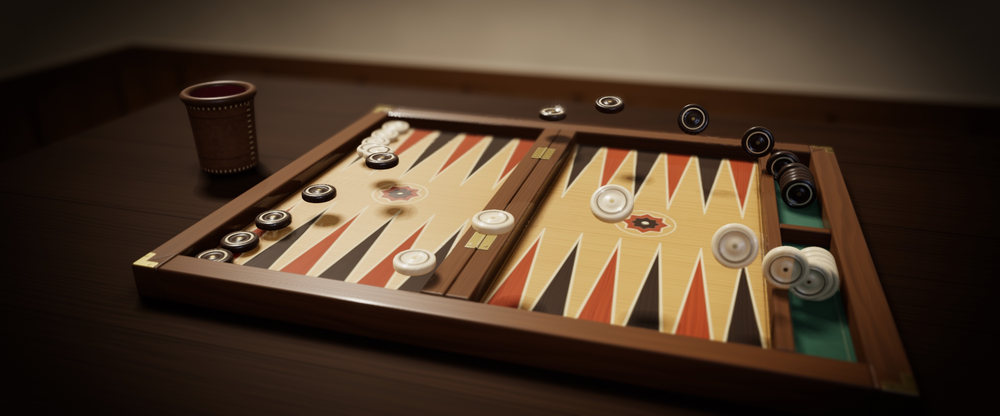
Capítulo 2
El tablero, la preparación y la pantalla de juego
En este capítulo verás los cuadrantes del tablero, la posición inicial de las fichas, cómo empieza el juego y en qué se diferencian los dos conjuntos de reglas; el capítulo termina con la pantalla de juego de Fichas y Dados.
2.1 El tablero de backgammon
Al abrir el tablero verás en total 24 triángulos estrechos, alineados a lo largo de los dos lados largos; a cada uno lo llamamos punta. Los triángulos se pintan alternando dos colores solo para facilitar la vista; para las reglas, eso no significa nada.
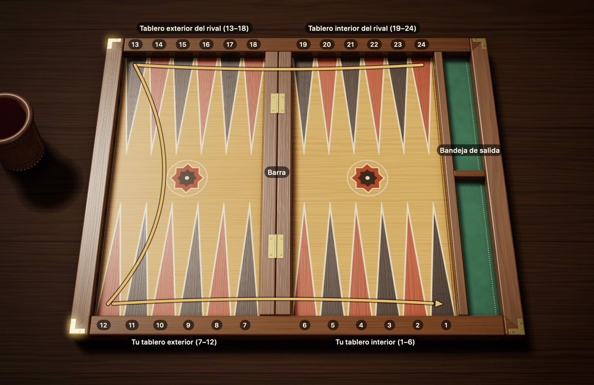
Figura 2.1El tablero de backgammon: 24 puntas, cuatro cuadrantes y la barra. Tú estás abajo. La flecha dorada muestra el recorrido de tus fichas desde la punta 24 hasta la punta 1; tu rival hace el mismo recorrido en sentido contrario.
Los cuadrantes. Piensa en el tablero como en un campo dividido en cuatro cuadrantes, cada uno con seis puntas. Los dos cuadrantes que tienes delante son tu lado; los dos de enfrente, el de tu rival:
Tu tablero interior (1–6): Donde termina el viaje. Cuando las fichas llegan aquí, se sacan del tablero. En la Figura 2.1, abajo a la derecha.
Tu tablero exterior (7–12): La última parada antes de entrar en el tablero interior. Abajo a la izquierda.
El tablero exterior del rival (13–18): La mitad del recorrido. Arriba a la izquierda.
El tablero interior del rival (19–24): Donde empieza el viaje. Arriba a la derecha.
La barra. El listón elevado que hay en el centro del tablero se llama barra. Tiene dos funciones: separa la mitad izquierda del tablero de la derecha y es el lugar donde esperan las fichas comidas. No influye en el conteo de puntas: una ficha que pasa de la 7 a la 6 solo avanza un paso, aunque cruce la barra.
La lógica de la numeración. Cada jugador numera las puntas empezando por su propio tablero interior. Por eso cada triángulo tiene dos nombres: la punta que para ti es la 1, para tu rival es la 24. Para evitar confusiones, todos los números de este libro están escritos desde tu punto de vista.
El sentido de la marcha. Tus fichas avanzan siempre hacia los números más bajos. Una ficha que sale de la 24, arriba a la derecha, va primero hacia la izquierda por el borde superior, baja por el lado izquierdo y después avanza hacia la derecha por el borde inferior hasta llegar a tu tablero interior. Las fichas del rival hacen el mismo recorrido al revés; por eso, los dos bandos se encuentran de frente por el camino.
El tablero invertido. A algunos jugadores les gusta tener el tablero interior a la izquierda. En ese caso, todo el tablero queda como en un espejo y las fichas giran en el sentido de las agujas del reloj. Para las reglas, las dos disposiciones son exactamente iguales.
2.2 La posición inicial
Todos los juegos empiezan desde la misma posición inicial. Coloca tus 15 fichas en cuatro puntas, de la más lejana a la más cercana, así:
Punta 24, 2 fichas. La esquina del tablero interior del rival. Estas dos son tus fichas más alejadas de casa.
Punta 13, 5 fichas. La esquina superior izquierda; justo a mitad de camino.
Punta 8, 3 fichas. En tu tablero exterior, a dos pasos de tu tablero interior.
Punta 6, 5 fichas. La primera punta de tu tablero interior, la que da a la barra.
2 + 5 + 3 + 5 suman 15. Tu rival monta la misma disposición desde su lado, así que sus fichas quedan en tus puntas 1, 12, 17 y 19. Si doblaras el tablero por la mitad, los dos bandos coincidirían exactamente.
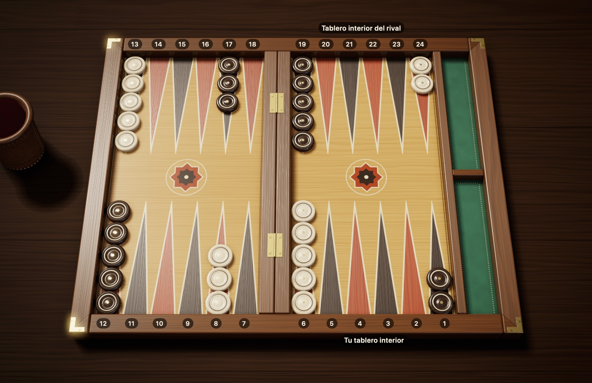
Figura 2.2La posición inicial: 15 fichas por jugador. Tus fichas son las de color crema y tu tablero interior está abajo a la derecha; las del rival son marrón oscuro, y su tablero interior está arriba a la derecha. Tienes 2 fichas en la 24, 5 en la 13, 3 en la 8 y 5 en la 6.
Un truco para recordarla: Memoriza «2-5-3-5» y coloca las fichas empezando por la punta más retrasada. Un tercio de tus fichas (5) ya está en tu tablero interior; las demás están en distintos tramos del recorrido. Buena parte del juego consiste en llevar a casa, sin riesgos, las fichas que se han quedado atrás.
2.3 El comienzo del juego
Los dados deciden quién hace la primera jugada. Cada jugador tira un solo dado, y empieza quien saca el número más alto. Si salen números iguales, la tirada no cuenta: los dos vuelven a tirar hasta que salgan números distintos.
Sobre la primera jugada del ganador hay dos tradiciones distintas:
Regla internacional: Nadie vuelve a tirar. Los dos dados que hay en la mesa, el tuyo y el de tu rival, forman juntos tu primera jugada. Si tú has sacado un 5 y el rival un 3, juegas 5-3. Como los dados de la tirada inicial no pueden ser iguales, esta primera jugada nunca es de dobles.
Regla turca habitual: El ganador toma los dos dados y hace una tirada nueva. Esta tirada puede dar cualquier resultado, dobles incluidos.
A partir de ahí, los jugadores se alternan y tiran dos dados en cada turno.
Un juego nuevo. Con las reglas internacionales, cada juego empieza desde cero con la tirada inicial. En el tavla turco, en cambio, lo habitual es que empiece el ganador del último juego.
Etiqueta al tirar los dados. Al jugar en una mesa se siguen algunas costumbres. Los dados suelen agitarse en el cubilete y lanzarse en la mitad derecha del tablero. No vale un dado que queda inclinado, encima de una ficha o fuera del tablero: se repite la tirada con los dos dados. El turno pasa a ti en cuanto el rival recoge sus dados; si tiras antes, tu tirada no cuenta. Lo que se describe aquí es la etiqueta tradicional de la mesa; los reglamentos de torneo pueden variar en estos detalles según se usen reloj, cubilete o cuatro dados.
2.4 Reglas turcas e internacionales
En los dos conjuntos de reglas son iguales el conteo de puntas, las reglas de los dados y la lógica de los puntos. Las diferencias están en el comienzo, en la puntuación y en dos detalles del juego: en el tavla turco habitual se considera prohibido comer y escapar en tu propio tablero interior y, al sacar fichas, gastar pips cuando podrías sacar una ficha. La tabla siguiente recoge las reglas más habituales; puede haber pequeñas diferencias de una mesa a otra.
En Fichas y Dados puedes jugar con los dos conjuntos de reglas. En este libro, allí donde hay diferencias entre ellos, se indican las dos reglas por separado; basta con que elijas antes de empezar con cuál vas a jugar.
Tabla 2.1 Tavla turco y reglas internacionales
Aspecto
Internacionales (con cubo)
Tavla turco habitual
Primera jugada
Se juegan los dados de la tirada inicial; no puede ser de dobles
Quien saca más alto vuelve a tirar los dos dados; pueden salir dobles
Quién empieza el juego siguiente
En cada juego se hace una tirada inicial
Empieza el ganador del juego anterior
Comer y escapar en tu tablero interior
Permitido
Se considera prohibido (en Fichas y Dados se elige al crear una partida nueva; por defecto, permitido)
Al sacar fichas, adelantar una ficha cuando se podría sacar alguna (mover sin sacar)
Permitido
Se considera prohibido (en Fichas y Dados se elige al crear una partida nueva; por defecto, permitido)
Backgammon (victoria triple)
Sí (× 3)
No; cuenta como gammon (× 2)
Cubo doblador
Estándar; obligatorio en los torneos
No existe
Regla de Crawford
Estándar en las partidas
No existe
2.5 La pantalla de juego de Fichas y Dados
Cuando empieza la partida, alrededor del tablero aparecen unas zonas que muestran el estado del juego. La Figura 2.3 está tomada durante tu turno; debajo tienes lo que significa cada número.
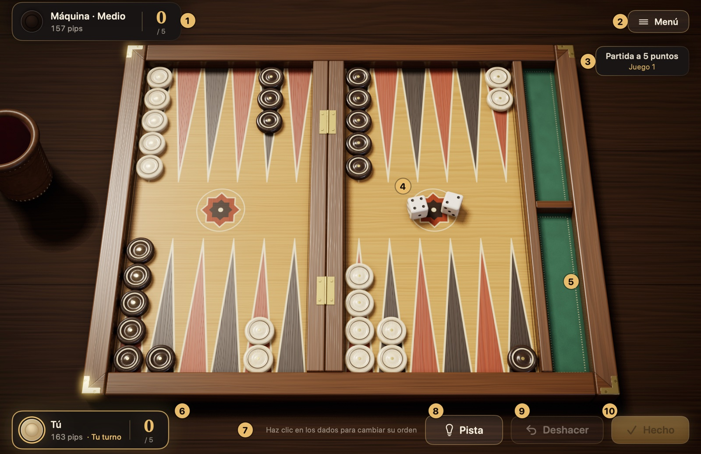
Figura 2.3La pantalla de juego de Fichas y Dados. La lista de abajo explica los elementos numerados.
Tarjeta del rival: Muestra a tu rival (con su nivel de dificultad, por ejemplo «Máquina · Medio»), su conteo de pips y sus puntos en la partida. Mientras la máquina piensa, aparece «Pensando…».
Menú: Pone el juego en pausa. En la tarjeta que se abre puedes reanudar el juego, ir a los ajustes, abrir la tarjeta «Cómo jugar», ver el historial de jugadas y las partidas, rendirte o salir de la partida. La tecla Esc hace lo mismo.
Información de la partida: Muestra a cuántos puntos se juega la partida (en una sesión aparece «Sesión») y en qué juego estás. Con las reglas internacionales, debajo aparece el indicador del cubo.
Dados: Tus dados caen en la mitad derecha del tablero; los de la máquina, en la mitad izquierda.
Bandeja de salida: El compartimento verde situado a la derecha del tablero. Tus fichas sacadas se colocan en la mitad inferior; las del rival, en la superior.
Tu tarjeta: Muestra tu conteo de pips, tus puntos en la partida y, si te toca jugar, el aviso «Tu turno».
Línea de ayuda: Te dice brevemente qué puedes hacer en cada momento. Si intentas una jugada no válida, aquí lees también el motivo, por ejemplo «Esta ficha no puede moverse con estos dados».
Botones opcionales. Si los activas en Ajustes, abajo a la derecha aparecen tres botones más: «Pista» marca en el tablero la jugada que sugiere el motor Maestro (⌘I); «Deshacer» deshace los pasos que has jugado en este turno (⌘Z); «Hecho», cuando la confirmación automática está desactivada, da por terminado tu turno y se lo pasa al rival (Retorno). Los detalles, en el apartado 5.3.
Antes de empezar. En el panel Nueva partida eliges el nivel de dificultad, el conjunto de reglas (tavla turco o internacionales), la duración de la partida —o, con las reglas internacionales, una sesión— y el color de tus fichas. Estas elecciones valen para toda la partida; los detalles, en el apartado 5.1.
¿Cómo transcurre un turno? Cuando te toca, los dados se tiran solos y caen sobre el tablero desde un cubilete de cuero; con las reglas internacionales, en el turno en que puedes doblar, la aplicación espera y los tiras tú con el botón «Tirar los dados» o la tecla Espacio. Mueves una ficha arrastrándola y soltándola, o haciendo clic primero en la ficha y después en la punta de destino; las fichas que se pueden mover se iluminan, y las puntas a las que pueden ir se marcan con un aro. Al jugar tu último paso, tu turno termina y pasa al rival. Si prefieres tirar tú en cada turno, confirmar el turno con «Hecho» o deshacer pasos, lo eliges en Ajustes; los detalles, en el apartado 5.3. De todos modos, la aplicación no acepta ninguna jugada contraria a las reglas.
¿Qué indica el conteo de pips? El número de pips de las tarjetas indica cuántas puntas le quedan por recorrer a ese jugador para llevar todas sus fichas a casa y sacarlas. Quien tiene el número más bajo va por delante en la carrera. Los detalles, en el apartado 4.2.
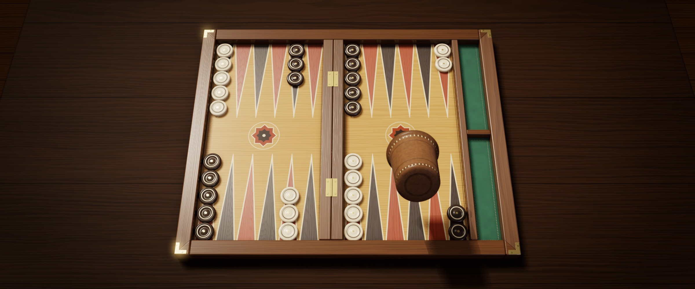
Capítulo 3
Las reglas del juego
Este capítulo explica por orden todas las reglas del juego: el movimiento de las fichas, los dobles, el movimiento forzado, cómo se come y cómo entra la ficha comida, la salida de las fichas, la puntuación y el cubo doblador.
3.1 El movimiento de las fichas
El jugador al que le toca tira dos dados y avanza sus fichas tantas puntas como indican los dados. Este apartado explica paso a paso cómo se juega un dado.
Leer los dados
Los dados dicen cuántas puntas avanzan las fichas. Un dado que marca 4 significa que una ficha avanza 4 puntas. Al contar, no se incluye la punta en la que está la ficha: empiezas por la siguiente. Con un 4, la ficha de la punta 13 llega a la punta 9 contando 12, 11, 10, 9.
En el backgammon no hay marcha atrás: una ficha solo puede avanzar hacia puntas de número más bajo, es decir, acercándose a su tablero interior.
Dos dados, dos jugadas distintas
Piensa en los dos dados como en dos derechos distintos. Si te sale 5-3, usas esos derechos como quieras:
Puedes jugar el 5 con una ficha y el 3 con otra.
Puedes dar los dos a la misma ficha y moverla 8 puntas en total; puedes jugar primero el 3 o primero el 5.
Cuando juegas los dos dados con una sola ficha, en realidad la ficha da dos saltos distintos y se posa un instante en la punta donde termina el primero. Esa punta intermedia también tiene que ser un lugar donde la ficha pueda caer. No se puede contar de una vez la suma de los dos dados y saltarse la punta intermedia.
Figura 3.1Dos formas de jugar un 5-3. Flechas verdes, forma 1: 8→3 (5) y 6→3 (3); dos fichas distintas hacen un punto en la punta 3. Flechas azules, forma 2: 24→21 (3) y después 21→16 (5); la misma ficha avanza 8 puntas en total. Esa ficha no puede jugar primero el 5: la punta 19, con marco rojo, es un punto del rival y no puede servir de parada intermedia.
Lo contrario también vale: no puedes dividir un dado en partes. Repartir un 5 entre dos fichas distintas, como 3 y 2, va contra las reglas; cada dado se juega entero con una sola ficha.
¿Dónde puede caer una ficha?
Cuando mueves una ficha, importa lo que haya en la punta de llegada. Hay cuatro posibilidades:
Tabla 3.1 La punta de llegada: ¿puede caer ahí la ficha?
¿Qué hay en la punta de llegada?
¿Puede caer la ficha?
Ninguna ficha (punta vacía)
Sí
Una o más fichas tuyas
Sí, sin límite de fichas
Una sola ficha del rival (un blot)
Sí, y la ficha del rival queda comida
Dos o más fichas del rival (un punto)
No
Figura 3.2Blot y punto. Para la ficha de la 11: la punta 10 está vacía, así que puede caer ahí. En la 8 tienes fichas tuyas: puedes poner encima tantas como quieras. En la 7 hay una sola ficha del rival (un blot): puedes caer ahí, y esa ficha queda comida. En la 9, con marco rojo, hay dos fichas del rival (un punto): la flecha roja discontinua indica que ahí no puedes caer.
A una punta en la que hay dos o más fichas juntas la llamamos punto. Piensa en un punto como en un muro: el rival no puede caer en esa punta ni usarla como parada intermedia en una jugada de dos dados. Hacer tus propios puntos con inteligencia es la forma más eficaz de estrecharle el camino al rival.
3.2 Los dobles
Cuando los dos dados muestran el mismo número (del 1-1 al 6-6), te llevas un premio: ese número no lo juegas dos veces, sino cuatro. Quien saca 5-5 hace cuatro jugadas de 5 y avanza 20 puntas en total. Estas tiradas se llaman dobles.
Puedes repartir las cuatro jugadas como quieras: una a cada una de cuatro fichas, dos a cada una de dos fichas o las cuatro a una sola ficha. Si mueves una sola ficha varios pasos, cada parada intermedia por la que pase tiene que ser una punta en la que pueda caer.
Figura 3.3Dobles: cuatro jugadas con 4-4. Lleva las dos fichas de la 24 a la 20 (4 + 4) y baja dos fichas de la 13 a la 9 (4 + 4). Cada una de las cuatro jugadas es de 4 puntas; puedes repartirlas entre las fichas que quieras.
3.3 El movimiento forzado
Después de tirar, no tienes derecho a decir «paso este turno». Si los dados permiten alguna jugada, estás obligado a hacerla. Para saber qué dados tienes que usar y cómo, hazte estas preguntas:
¿Hay alguna jugada que use los dos dados? Si la hay, tienes que hacerla. Si la primera jugada que se te ocurre deja un dado sin usar, busca otra en la que quepan los dos.
¿Solo se puede jugar un dado? Entonces juegas ese dado, y el otro se pierde.
¿Los dados se pueden jugar por separado, pero no los dos juntos? En ese caso no puedes elegir: juegas el dado del número mayor. La Figura 3.4 lo muestra.
¿No se puede jugar ningún dado? Pierdes el turno, y le toca tirar al rival.
¿Te han salido dobles? Si no caben las cuatro jugadas, estás obligado a hacer el mayor número posible de jugadas legales; si el orden de las jugadas cambia ese número, debes elegir el orden que permita jugar más. Las que sobren se pierden.
Figura 3.4La regla del dado mayor: 6-5. La ficha de la 14 puede ir a la 8 con el 6 (flecha verde) o a la 9 con el 5 (flecha discontinua), pero no puede jugar los dos: en ambos caminos, el segundo paso llega a la punta 3 (marco rojo), que es un punto del rival. Tus demás fichas, al fondo del tablero interior, no pueden jugar ningún dado. Si los dados se pueden jugar por separado pero no juntos, se juega el mayor: 14→8.
Como consecuencia de estas reglas, a veces solo te queda una jugada posible; es lo que se llama un movimiento forzado. En el backgammon digital, la propia aplicación controla estas reglas y no permite jugadas que vayan contra ellas; en un tablero real, en cambio, estar atento te corresponde a ti.
3.4 Los blots y cómo comerlos
Lo que hace emocionante el backgammon es comer fichas. Primero hay que distinguir dos situaciones:
Blot: Una ficha que se ha quedado sola en una punta. Está desprotegida: si el rival cae sobre ella, pierde su sitio.
Punto: Una punta que comparten al menos dos fichas del mismo color. Las fichas que están ahí son intocables.
Cuando pones tu ficha en la punta donde está un blot del rival, te lo comes. La ficha comida se retira del tablero y se coloca en la barra central. Para el rival es un serio retroceso: esa ficha tiene que empezar el viaje desde el principio, y hasta que no vuelva al tablero, el rival tiene las manos atadas.
Figura 3.5Comer: con 13→9 se come un blot. Con el 4, 13→9: caes sobre la ficha solitaria del rival y te la comes; la ficha comida va a la barra (flecha discontinua). Con el 2, 11→9: traes una segunda ficha y haces un punto en la 9; ahora ya no te pueden comer.
Lo que debes saber:
Comer no es obligatorio. Aunque puedas comer un blot, puedes elegir hacer otra jugada.
Después de comer, puedes seguir adelante con la misma ficha. Por ejemplo, con 4-2 puedes llevar una ficha 4 puntas, comer y después avanzar esa misma ficha 2 puntas más. Esto se llama «comer y escapar». Con las reglas internacionales está permitido en cualquier parte del tablero; en el tavla turco habitual y en el portes griego, en cambio, está prohibido escapar con la misma ficha después de comer en tu propio tablero interior. En Fichas y Dados, cuando juegas con las reglas turcas, puedes activar esta prohibición con la opción «Sin comer y escapar» del panel Nueva partida; por defecto está desactivada.
Puedes comer más de un blot en la misma jugada; por ejemplo, una ficha puede comer un blot en la parada intermedia de los dos dados y otro en la punta de llegada.
Las mismas reglas valen también para ti. Una ficha que dejas como blot puede ser comida si al rival le sale el número justo. Por eso, siempre que puedas, intenta mantener tus fichas de dos en dos.
3.5 Entrar una ficha comida
Cuando te comen una ficha, en tu siguiente turno solo tienes un asunto pendiente: devolver esa ficha al tablero. Mientras tengas una ficha esperando en la barra, tus demás fichas se consideran congeladas.
¿Por dónde entra? La ficha comida empieza el viaje desde el principio, es decir, desde el tablero interior del rival. El dado decide en qué punta entra. Cuenta las puntas del tablero interior del rival del 1 al 6, desde el extremo hacia la barra: si sacas un 1, entras en la punta de la esquina del tablero; si sacas un 6, en la punta pegada a la barra. Con tu numeración:
Tabla 3.2 Punta en la que entra la ficha comida, según el dado
Dado
Punta de entrada
1
24
2
23
3
22
4
21
5
20
6
19
En la punta que indica el dado puede no haber ninguna ficha, puede haber fichas tuyas o puede haber una sola ficha del rival. En los tres casos entras; en el último, al entrar te comes esa ficha. Solo te está cerrada una punta en la que el rival tiene un punto.
Figura 3.6Entrar una ficha comida: 5-2. Tu ficha de la barra entra en el tablero interior del rival: con el 1 en la 24, con el 2 en la 23… y con el 6 en la 19. Con el 5 no puedes entrar: en la punta 20 el rival tiene un punto (marco rojo). Con el 2 entras en la punta 23, que está vacía (marco verde). Después de entrar, juegas el 5 con otra ficha o con la que acaba de entrar.
La entrada, paso a paso:
Tira los dados y mira a qué punta del tablero interior del rival corresponde cada dado.
Si al menos una de esas puntas está abierta para ti, pon ahí tu ficha.
La entrada gasta un dado. El otro queda libre: lo juegas con la ficha que quieras, incluso con la que acaba de entrar.
Si tienes dos fichas en la barra, los dos dados se usan para entrarlas. Si solo puede entrar una, la entras; como la segunda sigue esperando en la barra, en ese turno no puedes hacer ninguna otra jugada.
Se entra con un solo dado. Supongamos que has sacado 5-2; la 20 y la 23 son puntos del rival, y la punta 18 está vacía. No puedes sumar los dos dados, contar 7 puntas y caer directamente en la 18. La ficha tiene que entrar primero, con un solo dado, en una punta abierta del tablero interior del rival; aquí las dos están cerradas, así que no puedes entrar.
Quedarse en la barra
Si el rival tiene un punto en las dos puntas que indican los dados, tu ficha no puede entrar y se queda en la barra ese turno. Es una tirada desafortunada: como no se puede mover ninguna otra ficha mientras haya una en la barra, pierdes el turno; en el siguiente vuelves a probar suerte.
Quedar encerrado
Lo peor que puede pasar es que las seis puntas del tablero interior del rival sean puntos. En ese caso, salga lo que salga en los dados, no hay ninguna punta por la que entrar; se dice que estás encerrado. Hasta que el rival deshaga alguno de sus puntos, todos tus turnos pasan sin jugada; en la mesa ni siquiera hace falta tirar los dados: el turno pasa directamente al rival. En Fichas y Dados ocurre lo mismo: no se tiran los dados, en la pantalla aparece «Encerrado» y el turno pasa directamente al rival.
Figura 3.7Encerrado: el tablero interior del rival está completamente cerrado. Tu ficha de la barra podría entrar en cualquier punta abierta entre la 19 y la 24, pero las seis son puntos (marcos rojos). A esto se le llama quedar encerrado: hasta que el rival abra uno de sus puntos, tus turnos pasan sin que se tiren los dados.
3.6 Sacar fichas
La recta final de la carrera consiste en retirar las fichas del tablero; a esto se le llama sacar fichas. Hay una condición previa: todas las fichas que tengas en el tablero deben estar en tu tablero interior, es decir, en las puntas de la 1 a la 6. Si una sola ficha está fuera o esperando en la barra, no puedes empezar a sacar.
La regla básica
La regla es sencilla: el número del dado indica la punta de la que sacas una ficha. Si sale un 6, retiras una ficha de la punta 6; si sale un 2, de la punta 2, y la dejas en el hueco del borde del tablero. La ficha que sale queda definitivamente fuera del juego.
Figura 3.8Sacar fichas: dos fichas con 6-4. Con el 6 retiras una ficha de la punta 6, y con el 4, una de la punta 4, y las pones en la bandeja de salida de la derecha. Solo puedes empezar a sacar cuando tienes las 15 fichas en tu tablero interior.
Si no hay ficha en la punta del dado
A veces, la punta que indica el dado está vacía. Entonces hazte estas dos preguntas, por orden:
¿Tengo alguna ficha en una punta más alta? Si la tienes, con ese dado no puedes sacar una ficha de una punta más baja; normalmente juegas el dado avanzando una ficha de esa punta más alta.
¿No tengo ninguna ficha más arriba? Entonces sacas una ficha de la punta más alta en la que tengas fichas. Por ejemplo, si tu ficha más alejada está en la 4, tanto un 6 como un 5 sacan esa ficha.
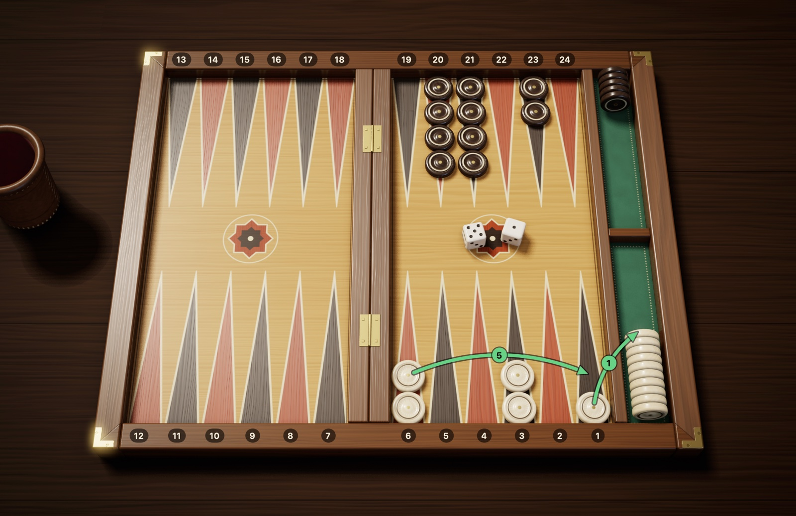
Figura 3.9Sacar fichas: si hay fichas más arriba, se avanza. Con el 5: la punta 5 está vacía, pero hay fichas en la 6, que es más alta; con el 5 no puedes sacar de la 3 ni de la 1. Juegas el 5 avanzando una ficha de la 6 (6→1), y con el 1 sacas una ficha de la punta 1. Otra opción: primero, con el 1, 6→5, y después, con el 5, sacar esa ficha de la punta 5. En la bandeja de salida están las 10 fichas que ya habías sacado.Figura 3.10Sacar fichas: desde la punta más alta. Ya no te quedan fichas en las puntas 6 y 5 ni más arriba. En este caso, con cada uno de los dos dados sacas una ficha de la punta ocupada más alta, es decir, de la 4.
No estás obligado a sacar
Si tienes otra jugada legal, no estás obligado a sacar ninguna ficha. Adelantar fichas dentro del tablero interior y dejar la salida para más tarde es lo que llamamos mover sin sacar. A veces es la opción más inteligente, para no dejarle al rival un blot que pueda comer. También está permitido avanzar una ficha con un dado y sacarla del tablero con el otro. Esta libertad es propia de la regla internacional; en el tavla turco habitual se considera prohibido gastar pips avanzando una ficha con el dado pequeño cuando se podría sacar una. En Fichas y Dados, cuando juegas con las reglas turcas, puedes activar esta prohibición con la opción «Sacar obligatorio» del panel Nueva partida; por defecto está desactivada.
Si te comen mientras sacas fichas
Si el rival tiene una ficha esperando en tu tablero interior, un blot que dejes mientras sacas fichas puede ser comido. Entonces la salida se detiene: la ficha comida tiene que entrar primero por el tablero interior del rival, dar la vuelta al tablero y volver a tu tablero interior. Cuando todas las fichas que te quedan en el tablero vuelven a estar reunidas en tu tablero interior, sigues donde lo habías dejado.
3.7 El final del juego y los puntos
Gana el juego quien saca primero todas sus fichas. Lo que vale esa victoria, en cambio, depende de lo rezagado que haya quedado tu rival en el momento final. Cuando termine el juego, mira las fichas del rival: se dará uno de estos tres casos:
Tabla 3.3 El resultado del juego y los puntos
Resultado
Situación del rival
Internacional, sin cubo
Internacional, con cubo
Tavla turco
Juego simple
Ha sacado al menos una ficha
1
Valor del cubo × 1
1
Gammon
No ha sacado ninguna ficha
2
Valor del cubo × 2
2
Backgammon
No ha sacado ninguna ficha y aún tiene alguna en la barra o en tu tablero interior
3
Valor del cubo × 3
2 (cuenta como gammon)
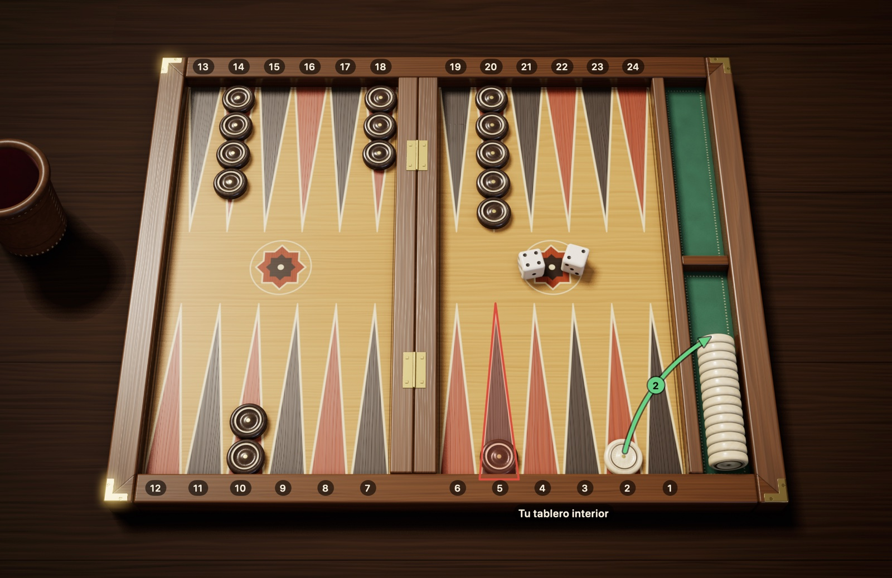
Figura 3.11Backgammon: el rival no ha sacado ninguna ficha y tiene una en tu tablero interior. Con el 2 has sacado tu última ficha y has ganado el juego. El rival no ha podido sacar ninguna ficha: eso ya es, por sí solo, un gammon (2 puntos). Además, todavía tiene una ficha en la punta 5, con marco rojo, es decir, en tu tablero interior: backgammon (3 puntos).
Ejemplos:
Si, cuando sacas tu última ficha, el rival ya ha sacado 4, ganas un juego simple: 1 punto.
Si el rival no ha podido sacar ni una ficha, pero no le queda ninguna ni en la barra ni en tu tablero interior, ganas un gammon: 2 puntos.
Si el rival no ha podido sacar ninguna ficha y todavía tiene alguna en la barra o en tu tablero interior, ganas un backgammon: 3 puntos.
Con el cubo doblador en el 8, quien gana un gammon se anota 8 × 2 = 16 puntos.
En el tavla turco, el backgammon no es un resultado aparte: esa situación también cuenta como gammon y vale 2 puntos. Antes de empezar, aclara con qué conjunto de reglas vas a jugar.
Los puntos de la partida. El backgammon no suele jugarse a un solo juego, sino hasta un número de puntos determinado; en los torneos, normalmente a 5, 7 u 11 puntos. Al final de cada juego se le anotan los puntos al ganador; si se juega con cubo, los puntos se multiplican por el valor del cubo. Gana la partida quien llega primero a la puntuación fijada. Por eso, ganar un gammon o librarse de uno puede cambiar el resultado de la partida.
3.8 El cubo doblador
El cubo doblador es un cubo con números que nunca se tira. En sus caras figuran el 2, el 4, el 8, el 16, el 32 y el 64, y lo único que indica es cuánto vale el juego en ese momento. En el tavla que se juega en los barrios de Turquía apenas se ve; en cambio, es imprescindible en los torneos internacionales y en las partidas en línea. Fichas y Dados también tiene cubo doblador: se usa cuando eliges las reglas internacionales al empezar; cómo doblar y cómo responder a una oferta se explica en el apartado 5.4. Si vas a jugar sin cubo, puedes saltarte este apartado.
Dónde está el cubo y qué significa
Al empezar el juego, el cubo está entre los dos jugadores y en su cara superior se lee 64. Como el cubo no tiene ningún 1, aquí el 64 significa «todavía no se ha doblado; el juego vale 1 punto». Mientras el cubo está en el centro, cualquiera de los dos puede hacer la primera oferta. Una vez aceptada una oferta, en cambio, el jugador que tiene el cubo delante es quien tiene derecho a la siguiente oferta. En Fichas y Dados, el cubo se muestra debajo de la información de la partida, arriba a la derecha: al principio aparece «1 Cubo en el centro»; cuando se acepta un doble, se lee «Cubo tuyo» o «Cubo del rival», junto con el valor del cubo.
Doblar, paso a paso
¿Cuándo? Solo puedes ofrecer el doble en tu turno y antes de tocar los dados. Una vez tirados los dados, la ocasión de ese turno ha pasado.
¿Cómo? Si crees que tu posición es buena, giras el cubo al valor siguiente (la primera vez, al 2), se lo acercas al rival y dices «doblo». Significa: «¿Jugamos este juego al doble?».
¿Qué puede hacer el rival?
Acepta: Se queda el cubo en su lado, con el valor doblado (en el primer doble, el 2) hacia arriba; el juego sigue desde la misma posición, pero ahora vale el doble.
Rechaza: Abandona el juego en ese mismo momento. Pierde los puntos que valía el cubo antes de la oferta; en la primera oferta, 1 punto.
¿De quién es la siguiente oferta? El cubo pasa al jugador que ha aceptado la oferta, y solo él tiene derecho a doblar la próxima vez. Por eso, las ofertas se van alternando: el mismo jugador no puede doblar dos veces seguidas.
Ejemplo
Supongamos que, al principio del juego, tu rival dobla y tú aceptas; el cubo está en el 2, delante de ti. Unos turnos después, el juego se pone a tu favor: giras el cubo al 4 y se lo ofreces al rival. Si el rival rechaza, ganas el juego y te anotas 2 puntos. Si acepta, el cubo pasa a estar delante de él, en el 4, y los puntos que se ganen al final del juego se leen en la fila «4» de la Tabla 3.4.
Tabla 3.4 Puntos ganados según el valor del cubo
Cubo
Juego simple
Gammon
Backgammon
En el centro (1)
1
2
3
2
2
4
6
4
4
8
12
8
8
16
24
Lo que debes saber:
Doblar no tiene techo: después del 64, el valor sigue doblándose (128, 256…). Aun así, a valores tan altos se llega muy rara vez.
Si el derecho a doblar es tuyo, tener una ficha esperando en la barra no te impide ofrecer el doble. En Fichas y Dados, la única excepción es quedar encerrado: cuando el tablero interior del rival está completamente cerrado, el turno pasa sin que se tiren los dados, y en ese turno tampoco se puede doblar.
Decidir si doblar o no, y si aceptar o no, es una de las habilidades más importantes del juego; los criterios, en el epígrafe siguiente.
Las decisiones del cubo
Usar bien el cubo es una de las habilidades más sutiles del backgammon. Lo que sigue no son reglas exactas, sino criterios sólidos para empezar.
Para aceptar: Cuando te ofrecen un doble, pregúntate más o menos esto: «Si jugara este juego cuatro veces, ¿ganaría al menos una?». Si tus posibilidades de ganar rondan una de cada cuatro o son mayores, aceptar suele ser lo correcto. Porque, si rechazas, la pérdida es segura; si aceptas, en cambio, conservas la posibilidad de darle la vuelta al juego y de usar después el cubo a tu favor. Este criterio del 25 % sale del modelo más sencillo, el que no tiene en cuenta los gammons ni los redobles: el valor de tener el cubo en tu poder baja un poco el umbral, el riesgo de gammon lo sube, y el marcador de la partida puede moverlo en los dos sentidos.
Para ofrecer: Si tu posición es claramente buena pero el juego aún no está decidido, ha llegado el momento de doblar. Evita tres errores:
Doblar demasiado pronto: Un doble ofrecido con poca ventaja le da al rival una aceptación cómoda y, además, la propiedad del cubo.
Doblar demasiado tarde: Tu posición mejora tanto que el rival ya no acepta y abandona el juego cediéndote 1 punto; en cambio, si hubieras doblado un turno antes, habría aceptado y tú habrías jugado por el doble. A esto se le llama «perder el mercado».
Posición demasiado buena para doblar: La posición puede ser tan fuerte que el rival rechazaría el doble con toda seguridad. Si lo que esperas ganar siguiendo sin cubo y buscando el gammon supera el 1 punto que te daría el rechazo del rival, la posición es «demasiado buena para doblar». Este criterio no sirve en las sesiones en las que se aplica la regla Jacoby: allí, si no se ha doblado, el gammon vale 1 punto, así que hay que girar el cubo. Cuando se juega una partida, el marcador también cambia el valor del gammon.
La regla 8-9-12 en la carrera pura. Si ya no hay contacto y el juego es solo una carrera de pips, decide el conteo de pips. Calcula la diferencia en porcentaje dividiéndola entre el conteo del jugador que va por delante; si el que va por detrás eres tú, divide también entre el conteo del rival, es decir, del que va en cabeza:
Tabla 3.5 La regla 8-9-12 en la carrera pura
Diferencia de pips (respecto al conteo del que va en cabeza)
Decisión
8 % por delante
Plantéate ofrecer el primer doble
9 % por delante
Si el cubo es tuyo, redobla
Hasta un 12 % por detrás
Si te doblan, acepta
Más de un 12 % por detrás
Rechaza
Ejemplo: si tu conteo es 80 y el del rival 88, vas 8 pips por delante; eso es el 10 % de 80, el conteo del que va en cabeza, así que estás en zona de doblar. Como la regla se basa en el conteo de pips en bruto, sé algo más prudente si has amontonado tus fichas en las puntas bajas. La regla vale cuando es tu turno, cuando el contacto ha terminado por completo y en carreras medias o largas; cuando el juego se reduce a las últimas fichas, en lugar de calcular porcentajes hay que mirar dónde están las fichas y, si se juega una partida, valorar además el marcador.
Reglas de partida y de sesión
Regla de Crawford: Cuando, en una partida, uno de los jugadores se queda por primera vez a un punto del objetivo (con 4 puntos en una partida a 5), en el juego que viene justo después no se usa el cubo; es el llamado juego Crawford. Cuando termina ese juego, el cubo vuelve a usarse con libertad hasta el final de la partida. La regla se aplica una sola vez en toda la partida: si después el otro jugador llega también a esa puntuación, no se juega otro juego Crawford. Su objetivo es impedir que el jugador que va por detrás doble en cada juego nada más empezar y recupere toda la diferencia en un solo juego. La regla debe su nombre al jugador estadounidense John R. Crawford.
Reglas opcionales (se ven en las sesiones; en las partidas no se usan):
Dobles automáticos: Si los dados de la tirada inicial salen iguales, el cubo se gira solo al 2 y se queda en el centro. Normalmente se limita a una vez por juego.
Beaver: El jugador al que doblan puede, al aceptar, volver a doblar el cubo en el acto, y el cubo sigue en su poder. Quien ofreció el doble puede aceptar el beaver o rechazarlo; si lo rechaza, pierde el valor del doble que había ofrecido, que en el primer doble es de 2 puntos.
Raccoon: El jugador que recibe un beaver, es decir, quien ofreció el primer doble, puede volver a doblar el valor en el acto. El cubo sigue en poder del jugador que aceptó el doble; el otro jugador acepta el nuevo valor o abandona el juego con el valor vigente. Como el beaver, solo se ve en las sesiones.
Regla Jacoby: Si en el juego no se ha doblado nunca, el gammon y el backgammon valen solo 1 punto. Anima al jugador que va por delante a doblar en lugar de buscar el gammon.
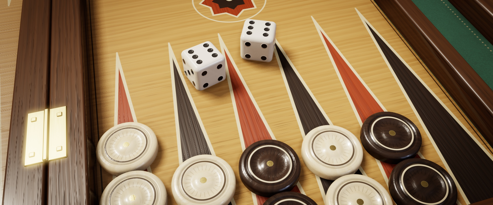
Capítulo 4
Jugar mejor
Una vez aprendidas las reglas, las bases para jugar bien: un juego de ejemplo, el conteo de pips, las jugadas de apertura, los planes de juego, el riesgo de dejar blots y la estrategia para sacar fichas.
4.1 Un juego de ejemplo: los cinco primeros turnos
Para ver las reglas en acción, sigamos paso a paso los cinco primeros turnos de un juego. El tablero está en la posición inicial y jugamos con las reglas internacionales. Los números de las puntas se dan desde tu punto de vista.
La tirada inicial. Tú sacas un 3, y tu rival, un 1. Has sacado más alto, así que haces tu primera jugada con ese 3-1. Con el 3 juegas 8→5 y con el 1, 6→5, y haces un punto en la punta 5. Es una de las jugadas de apertura más recomendadas.
El rival saca 6-4. Hace correr una de sus fichas de atrás: la ficha que está en tu punta 1 va a la 7 con el 6 y a la 11 con el 4. La ficha se queda sola en la 11, es decir, es un blot.
Tú sacas 4-2. Con el 2 juegas 13→11 y te comes el blot del rival; su ficha va a la barra. Con el 4 juegas 24→20.
El rival saca 5-5. Como tiene una ficha en la barra, primero tiene que entrarla. Con un 5 tendría que entrar en tu punta 5, pero ahí tienes un punto. Como sus cuatro jugadas son de 5, el rival se queda en la barra: en este turno no puede mover ninguna ficha.
Tú sacas 6-5. Llevas la ficha que te quedaba en la 24 a la 18 con el 6 y a la 13 con el 5. Como la 18 está vacía, la parada intermedia está permitida; en la 13 ya tienes fichas.
Al cabo de los cinco turnos, el tablero queda como en la Figura 4.1:
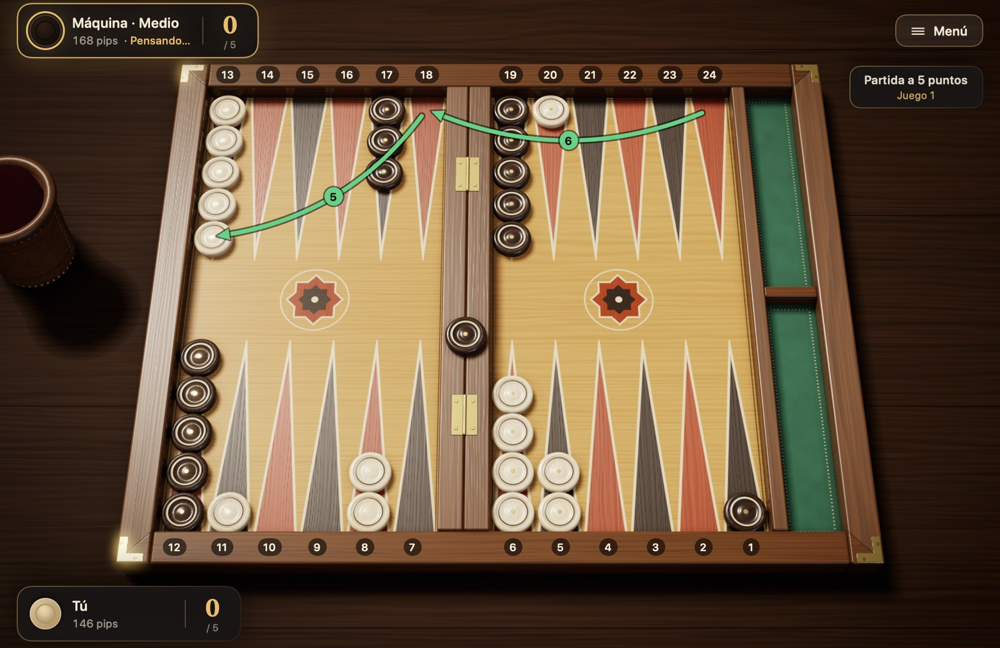
Figura 4.1Juego de ejemplo: la posición después del quinto turno. Último turno: con 6-5, la ficha de la 24 corrió primero a la 18 y después a la 13 (flechas verdes). Una ficha del rival espera en la barra; tu punto en la punta 5 le pone difícil la entrada. Tus blots están en la 20 y en la 11. Conteos de pips en las tarjetas de los jugadores: tú, 146; el rival, 168; le toca al rival.
En estos cinco turnos se han usado todas estas reglas: el movimiento, hacer puntos, comer, entrar desde la barra y quedarse en la barra. El juego sigue así hasta que los dos bandos han llevado sus fichas a su tablero interior y las han sacado.
4.2 El conteo de pips
Como el backgammon es una carrera, en cualquier momento del juego es muy importante la pregunta «¿quién está más cerca de casa?». Eso se mide con el conteo de pips: el total de puntas que un jugador tiene que recorrer para llevar todas sus fichas a su tablero interior y sacarlas del tablero.
¿Cómo se calcula? La distancia de cada ficha es el número de su punta en tu propia numeración. Una ficha en la punta 6 está a 6 pips; una en la punta 13, a 13 pips. Una ficha en la barra está en la posición más alejada y cuenta 25. Sumas las distancias de todas las fichas.
Por ejemplo, en la posición inicial: 2 × 24 + 5 × 13 + 3 × 8 + 5 × 6 = 48 + 65 + 24 + 30 = 167 pips. Los dos jugadores empiezan el juego con 167. Con cada jugada, tu conteo baja exactamente lo que la ficha avanza de verdad (al sacar fichas, si usas un dado mayor para sacar de la punta más alta, el conteo no baja el valor del dado, sino el número de la punta en la que estaba la ficha); una ficha comida, en cambio, vuelve a la barra y hace subir de golpe el conteo de su dueño.
En Fichas y Dados no tienes que calcularlo. El conteo de pips de las tarjetas de los jugadores se actualiza solo después de cada jugada. En el juego de ejemplo del apartado 4.1, tú estás en 146 pips y el rival en 168; es decir, tienes una ventaja de unas tres tiradas.
¿Para qué sirve este dato?
Si vas por delante, evitar el contacto y volver deprisa a casa suele ser un buen plan.
Si vas por detrás, es difícil que ganes solo con la carrera; buscas ocasiones para comer fichas del rival o cortarle el paso.
Si juegas con cubo, en una carrera pura las decisiones del cubo dependen de la diferencia de pips. Qué hacer con cada diferencia se explica en el epígrafe «Las decisiones del cubo» del apartado 3.8.
4.3 Las jugadas de apertura
Como la primera jugada del juego se hace siempre desde la misma posición, los análisis informáticos han establecido en gran medida cuáles son las buenas jugadas para cada tirada. La Tabla 4.1 recoge las jugadas más aceptadas para juegos con reglas internacionales en los que no se tiene en cuenta el marcador de una partida; en una partida, el marcador puede cambiar algunas elecciones. La notación es «origen/destino»: 8/5 significa de la punta 8 a la punta 5; (2) indica que la misma jugada se hace con dos fichas.
Tabla 4.1 Jugadas de apertura con las reglas internacionales
Tirada
Jugada recomendada
Alternativa razonable
Objetivo
3-1
8/5 6/5
—
Punto en la 5
4-2
8/4 6/4
—
Punto en la 4
6-1
13/7 8/7
—
Punto en la 7, cerrar el paso delante del tablero interior
5-3
8/3 6/3
—
Punto en la 3
6-5
24/13
—
Poner a salvo una de las fichas de atrás en una sola jugada
6-4
24/14
24/18 13/9 o 8/2 6/2
Las tres jugadas valen casi lo mismo
6-3
24/18 13/10
24/15
Desarrollar a la vez atrás y en el centro
6-2
24/18 13/11
24/16
Desarrollar a la vez atrás y en el centro
5-4
24/20 13/8
13/9 13/8
Posible ancla atrás, nueva ficha en el centro
5-2
13/8 24/22
13/8 13/11
Desarrollo seguro desde el centro
5-1
13/8 24/23
13/8 6/5
Ficha segura, separar las fichas de atrás
4-3
13/10 13/9
24/21 13/9 o 24/20 13/10
Traer fichas constructoras para el tablero interior
4-1
24/23 13/9
13/9 6/5
Separar las fichas de atrás, nueva ficha en el centro
3-2
24/21 13/11
13/11 13/10
Separar las fichas de atrás, nueva ficha en el centro
2-1
13/11 6/5
13/11 24/23
Tantear la punta 5 o separar las fichas de atrás
Las jugadas de la Tabla 4.1 se basan en los análisis informáticos del sitio web Backgammon Galore. Las de la columna «Alternativa razonable» también son buenas jugadas: en los análisis, la diferencia entre ellas es muy pequeña, y puedes elegir según tu estilo de juego. Los principiantes que quieran jugar seguro pueden preferir 13/11 24/23 con 2-1 y, con 6-4, 8/2 6/2, que no deja ningún blot. Para comparar: el blot que deja 24/14 se come con 11 de las 36 tiradas posibles; de los dos blots que deja 24/18 13/9, en cambio, al menos uno se come con 27 de las 36.
Con la regla internacional, la primera jugada nunca es de dobles. Si juegas con la regla turca, la primera tirada también puede ser de dobles; en ese caso, estas jugadas son un buen comienzo:
Tabla 4.2 Primera tirada de dobles con la regla turca
Dobles
Jugada recomendada
6-6
24/18(2) 13/7(2)
5-5
13/3(2)
4-4
24/20(2) 13/9(2)
3-3
8/5(2) 6/3(2)
2-2
13/11(2) 6/4(2)
1-1
8/7(2) 6/5(2)
No hace falta que te aprendas estas tablas de memoria. Pero es instructivo ver la lógica que comparten: si puedes, haz un punto nuevo en tu tablero interior o justo delante; si no puedes, pon en movimiento las fichas de atrás, y no dejes fichas solas donde sea fácil comerlas.
4.4 Los planes de juego básicos
La mayoría de los juegos de backgammon acaban convirtiéndose en uno de unos pocos planes conocidos. Cuál te conviene depende de la diferencia de pips y de los puntos que haya en el tablero. También es normal pasar de un plan a otro a medida que avanza el juego.
Juego de carrera: Si vas por delante en el conteo de pips, rompes el contacto con el rival y llevas deprisa todas tus fichas a casa. Cuando se acaba el contacto, el juego se convierte en una carrera pura de dados, y quien va por delante suele ganar.
Juego de contención (ancla): Mantienes un punto de dos fichas en el tablero interior del rival. Esa «ancla» te protege de que te coman y te da la ocasión de comer al rival si deja un blot mientras vuelve a casa. Si vas por detrás, es el plan más sólido.
Juego de prime: Haciendo puntos seguidos levantas una barrera delante de las fichas de atrás del rival. Si tienes seis puntos seguidos, la ficha de atrás no puede pasar con ninguna tirada; vas desplazando el prime poco a poco hacia tu tablero interior y acorralas al rival.
Blitz: Comes una y otra vez las fichas que el rival entra en tu tablero interior y lo cierras rápidamente. Un blitz que sale bien deja al rival encerrado y a menudo trae un gammon; pero, si fracasa, dejas atrás tus propios blots.
Back game: Cuando vas muy por detrás, mantienes dos anclas en el tablero interior del rival y esperas a que deje un blot mientras reúne sus fichas en casa. Es un plan de rescate, no un comienzo que se elija a propósito.
No son reglas mecánicas, sino intuiciones. El timing, la calidad de tus puntos, la situación de las fichas de atrás y el riesgo de gammon pueden exigir lo contrario de lo que indica la diferencia de pips: sería un error tanto abandonar enseguida un prime fuerte por tener una gran ventaja en pips como cortar un blitz que va bien solo porque vas por detrás.
4.5 El riesgo de dejar blots
A veces no puedes evitar dejar una ficha sola. Entonces la pregunta es: ¿dónde la dejo para que haya menos riesgo de que me la coman? La respuesta depende de a cuántas puntas está el blot de la ficha del rival que puede comérselo.
Figura 4.2Probabilidad de que te coman un blot, según la distancia. Un blot a 6 puntas es el que más peligro corre; a partir de 7, el riesgo cae de golpe. Las barras indican cuántas de las 36 tiradas posibles del rival comen tu blot (si no hay puntos por medio).
De la Figura 4.2 se sacan tres lecciones prácticas:
La distancia más peligrosa es 6. Un blot a 6 puntas se come con 17 de las 36 tiradas, es decir, casi con una de cada dos.
A 7 o más, es mucho más seguro. Para comer una ficha a esa distancia hacen falta los dos dados juntos; el riesgo baja de valores cercanos a la mitad a un sexto o menos.
Cerca no siempre es seguro. Incluso un blot a 1 punta se come con 11 de las 36 tiradas.
Estas cifras suponen una sola ficha del rival, un camino sin puntos por medio y que el rival no tiene ninguna ficha esperando en la barra. Si varias fichas del rival apuntan al mismo blot, el riesgo aumenta; si tus puntos cierran las paradas intermedias, disminuye. Por culpa de los dobles, distancias como 12, 16, 20 y 24 también se pueden alcanzar por caminos especiales; el riesgo no disminuye de forma regular con la distancia.
4.6 Estrategia para sacar fichas
Las reglas para sacar fichas son sencillas, pero sacarlas bien es una habilidad. A partir de la misma posición, dos jugadores pueden acabar con una o dos tiradas de diferencia según sus decisiones; en una carrera ajustada, esa diferencia decide el juego.
Al llevar las fichas a casa
Coloca las fichas en las puntas altas del tablero interior. Al entrar en el tablero interior, intenta colocar las fichas en las puntas 6, 5 y 4. Las fichas que se amontonan pronto en las puntas 1 y 2 te harán desperdiciar después los dados altos.
Repártelas bien. Tener las fichas repartidas por las puntas te permite sacar una ficha salga el dado que salga. Las puntas vacías, en cambio, significan que no podrás sacar ninguna ficha cuando salga ese número.
No te metas al fondo sin necesidad. Llevar una ficha recién entrada hasta la punta 1 «para avanzar un poco más» hace que, cuando empiece la salida, un dado alto como el 6 solo te sirva para 1 pip.
Sin contacto
Si las fichas del rival ya han pasado a todas las tuyas, ya no hay riesgo de que te coman y el juego es una carrera pura. En ese caso, el principio básico es este: en cada turno, saca todas las fichas que puedas. Los análisis informáticos muestran que es la mejor jugada en casi todas las posiciones; solo con distribuciones muy desequilibradas puede ser mejor recolocar una ficha dentro del tablero interior para desperdiciar menos las tiradas siguientes. Si no puedes sacar ninguna ficha, usa el dado para llenar puntas vacías. Si te salen dobles, no desaproveches la ocasión de sacar cuatro fichas de golpe.
Con contacto
Si el rival todavía tiene una o dos fichas en tu tablero interior, sacar fichas no es una carrera de velocidad, sino un juego de seguridad. Un solo blot le da al rival la ocasión de darle la vuelta al juego.
Vacía desde atrás. Despeja primero las fichas de las puntas más altas. Las que esperan cerca de la ficha del rival son las más peligrosas.
Deja un número par de fichas. Si mantienes las puntas con dos o cuatro fichas, las retiras de dos en dos con los dos dados y vacías la punta sin dejar ninguna ficha sola. En una punta con un número impar de fichas suele quedar una ficha sola.
Intenta tapar los huecos. Las puntas vacías de tu tablero interior pueden obligarte a dejar blots en las tiradas siguientes.
Si hace falta, mueve sin sacar. Si sacar una ficha va a dejar un blot, muchas veces es mejor mover las fichas dentro del tablero interior y seguir a salvo.
Los mismos principios valen si has empezado a sacar fichas mientras una ficha comida del rival espera en la barra: el rival puede entrar en cualquier momento y comerte un blot, así que saca fichas manteniendo tu tablero interior lo más cerrado posible.
4.7 Consejos para principiantes
Una vez aprendidas las reglas, estos principios sencillos te serán útiles en tus primeros juegos:
Si vas a dejar un blot, elige dónde. A veces es inevitable dejar una ficha sola; en ese caso, déjala donde el rival pueda comerla con menos tiradas, preferiblemente a 7 puntas o más.
Valora las puntas de tu tablero interior. Cada punto que haces en tu tablero interior le pone más difícil la entrada a la ficha del rival que te has comido. Las puntas 5 y 4 son las más valiosas.
No amontones las fichas en un solo sitio. Acumular cinco o seis fichas en una punta significa que esas fichas esperan sin servir para nada. Toma fichas de los montones y úsalas para hacer puntos nuevos.
Mantén la flexibilidad. Las fichas situadas a distancias distintas hacen útiles la mayoría de las tiradas futuras. Evita disposiciones que dependan de los mismos números.
Ponte también en el lugar del rival. Antes de hacer tu jugada, mira un momento qué podría hacer el rival con su próxima tirada.
No te precipites. Compara varias opciones para cada tirada. En Fichas y Dados, por defecto, un paso jugado no se puede deshacer. Si quieres probar jugadas distintas, activa «Mostrar el botón Deshacer» y desactiva «Confirmar las jugadas automáticamente» en Ajustes; los detalles, en el apartado 5.3.
Aprende de los juegos que pierdes. En el backgammon, la suerte puede decidir un juego; pero, si cometes el mismo error una y otra vez, el problema no está en los dados.
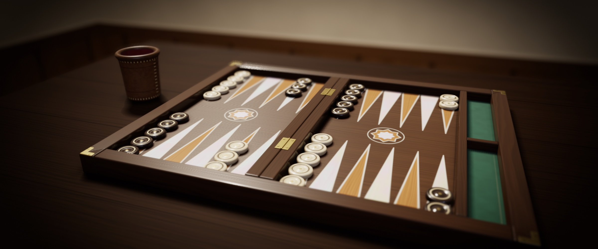
Capítulo 5
Cómo usar Fichas y Dados
Este capítulo responde paso a paso a la pregunta de cómo se hace cada cosa en Fichas y Dados: desde crear una partida hasta los ajustes. Los nombres de los botones y de los menús aparecen tal como están escritos en la aplicación.
5.1 Empezar una partida nueva
En el menú principal, pulsa «Nueva partida» (⌘N). En el panel que se abre hay cuatro opciones; con «Empezar» comienza la partida.
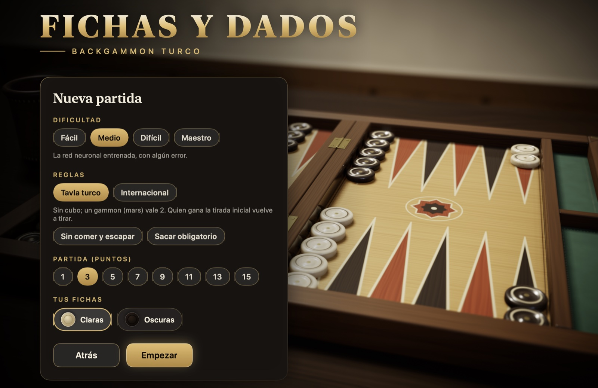
Figura 5.1El panel Nueva partida: dificultad, reglas, partida o sesión y tus fichas.
Dificultad: «Fácil» se equivoca a menudo y es ideal para aprender. «Medio» es una red neuronal entrenada que comete algún error de vez en cuando. «Difícil» es una red neuronal entrenada con millones de juegos. «Maestro», además, calcula todas las tiradas posibles.
Reglas: «Tavla turco» o «Internacional». Las diferencias están en la Tabla 2.1. Con «Tavla turco» seleccionado, debajo aparecen dos reglas tradicionales: «Sin comer y escapar» y «Sacar obligatorio». Las dos están desactivadas por defecto. Las reglas que elijas no cambian durante toda la partida.
Partida o sesión: Con «Partida (puntos)» eliges a cuántos puntos se juega la partida: 1, 3, 5, 7, 9, 11, 13 o 15. Con las reglas internacionales, al lado aparece también la pestaña «Sesión»: una sesión no tiene duración fijada; se anotan los puntos de cada juego y terminas la sesión cuando quieras. En una sesión aparecen además las opciones «Regla Jacoby», «Beaver», «Raccoon» y «Dobles automáticos»; qué son se explica en el epígrafe «Reglas de partida y de sesión» del apartado 3.8. En el tavla turco no hay sesiones.
Tus fichas: «Claras» u «Oscuras». Elijas las que elijas, tus fichas siempre están abajo. El color del icono depende del estilo de fichas elegido en Ajustes: con «Laca roja y negra», la ficha clara es roja.
Si empiezas una partida nueva mientras otra está en curso, la aplicación te lo pregunta antes. La partida en curso se guarda, y puedes volver a ella desde la tarjeta «Partidas». En la tarjeta de confirmación aparece también un resumen de la partida que va a empezar. Con ⌘N aparece la misma confirmación, también entre un juego y otro.
5.2 Tirar los dados y mover las fichas
Cuando te toca, los dados se tiran solos: caen desde el cubilete de cuero sobre la mitad derecha del tablero. Con las reglas internacionales, si tienes derecho a doblar, la aplicación espera; en la mitad derecha del tablero aparece el botón «Tirar los dados» y, debajo, el botón «Doblar». Tiras pulsando el botón, haciendo clic en los dados o pulsando la tecla Espacio. Si en Ajustes está desactivada «Tirar automáticamente», el botón «Tirar los dados» aparece en cada uno de tus turnos.
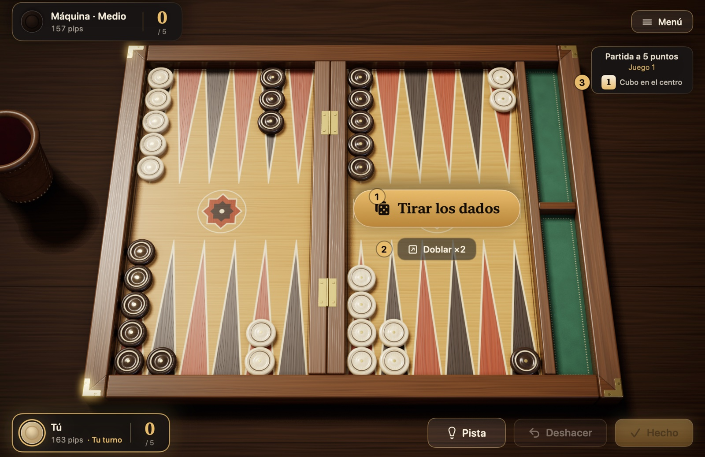
Figura 5.2Tu turno de tirar, cuando tienes derecho a doblar. 1 Botón «Tirar los dados»; 2 botón «Doblar»; 3 indicador del cubo.
Una vez tirados los dados, las fichas que puedes mover se iluminan. Puedes mover una ficha de cualquiera de estas formas:
Con clics: Haz clic primero en la ficha; las puntas a las que puede ir se marcan con un aro verde. Después haz clic en el destino. El destino en el que te comerías un blot del rival se marca con una diana roja.
Arrastrando: Arrastra la ficha y suéltala en el destino.
Rápido: Un doble clic mueve la ficha con el dado mayor; un clic derecho, con el menor.
Con el teclado: Tab recorre las fichas que se pueden mover, las teclas de flecha eligen el destino y Retorno mueve la ficha.
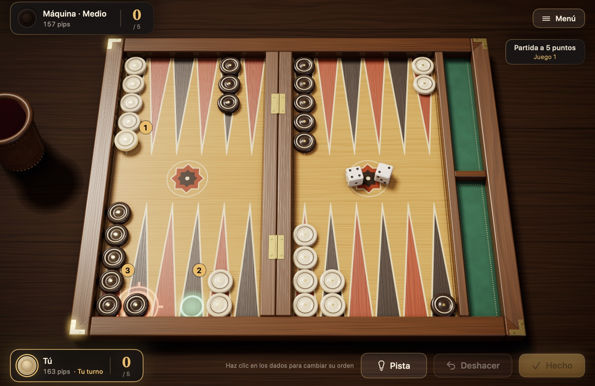
Figura 5.3Una jugada. Ha salido 4-2 y está seleccionada la ficha de la 13. 1: la ficha seleccionada; 2: la punta vacía a la que puede ir con el 4 (aro verde); 3: la punta en la que puede comer un blot del rival con el 2 (diana roja).
Para cambiar qué dado juegas primero, haz clic en los dados del tablero. Al jugar tu último paso, tu turno termina solo y pasa al rival; si solo tienes una jugada legal, la aplicación la juega por ti. Si prefieres confirmar tú el turno o deshacer pasos, desactiva «Confirmar las jugadas automáticamente» y activa «Mostrar el botón Deshacer» en Ajustes: entonces es «Hecho» (Retorno) lo que termina tu turno y, hasta ese momento, «Deshacer» (⌘Z) deshace uno a uno los pasos que has jugado. Si no tienes ninguna jugada posible, la aplicación muestra «¡No hay jugada posible!» y el turno pasa al rival. Si tienes una ficha en la barra y el tablero interior del rival está completamente cerrado, ni siquiera se tiran los dados: en la pantalla aparece «Encerrado» y el turno pasa directamente.
5.3 Pistas y ayudas de juego
El botón «Pista» está oculto por defecto; aparece abajo a la derecha cuando activas «Mostrar el botón Pista» en Ajustes. El botón (⌘I) marca en el tablero la jugada que sugiere el motor Maestro para ese turno; la marca desaparece cuando juegas tu primer paso. Con las reglas internacionales, también aconseja en las decisiones del cubo: antes de tirar, «Sugerencia: doblar» o «Sugerencia: no doblar, tirar»; ante un doble de la máquina, «Sugerencia: aceptar» o «Sugerencia: rechazar». Las pistas que usas quedan registradas en el resumen de fin de juego y en las estadísticas.
En la sección «Juego» de Ajustes hay opciones que facilitan el turno; todas están activadas por defecto, salvo los botones «Pista» y «Deshacer»:
Tirar automáticamente: Cuando te toca, los dados se tiran solos. En los turnos en los que puedes doblar, espera: la decisión del cubo es tuya. Si está desactivada, tiras tú en cada turno con el botón «Tirar los dados» o la tecla Espacio.
Confirmar las jugadas automáticamente: El turno termina solo con el último paso. Si está desactivada, terminas tu turno con el botón «Hecho» (Retorno); si «Deshacer» está activado, hasta ese momento puedes deshacer pasos.
Jugar automáticamente los movimientos forzados: Si solo hay una jugada legal, la aplicación la juega y el turno termina.
Resaltar las fichas que se pueden mover y Marcar los destinos con un aro: Activan o desactivan las fichas iluminadas y los aros verdes. Con los aros desactivados, el aro solo aparece en el destino que eliges con el teclado.
Mostrar el botón Pista y Mostrar el botón Deshacer: Las dos están desactivadas por defecto: no se pueden pedir sugerencias ni deshacer los pasos jugados. Al activarlas, los botones aparecen abajo a la derecha y también funcionan los atajos ⌘I y ⌘Z. Mientras «Deshacer» está desactivado, la sugerencia solo se puede pedir antes del primer paso.
5.4 Doblar y responder a una oferta
Solo se dobla con las reglas internacionales. Cuando es tu turno y el cubo está en el centro o es tuyo, pulsa el botón «Doblar» (⌘D) antes de tirar. En el botón aparece el valor al que subirá el cubo, por ejemplo «Doblar ×2». La máquina responde enseguida: si acepta, el cubo pasa a ella y el juego sigue; si rechaza, ganas el juego.
Cuando la máquina dobla, aparece una tarjeta en la pantalla:
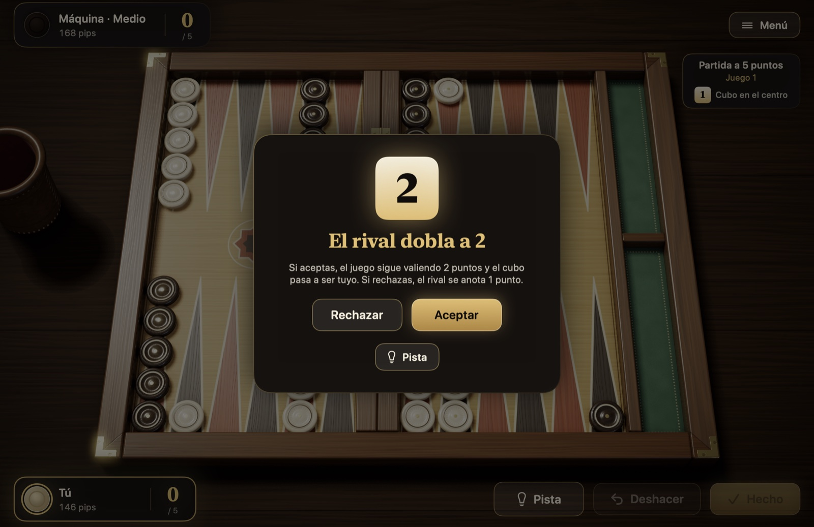
Figura 5.4La tarjeta de oferta de doble.
Aceptar: El juego sigue con el doble de valor y el cubo pasa a ser tuyo.
Rechazar: Abandonas el juego; el rival se anota tantos puntos como valía el cubo antes de la oferta.
Beaver: Aparece en las sesiones si la opción «Beaver» está activada. Aceptas el doble, vuelves a doblar el cubo en el acto, y el cubo se queda contigo.
Pista: Aparece si en Ajustes está activada «Mostrar el botón Pista»; muestra la sugerencia del motor Maestro para tu decisión.
Cuando eres tú quien dobla y la máquina responde con un beaver, aparece una tarjeta parecida: aceptas, rechazas o, si la opción «Raccoon» está activada, vuelves a doblar el cubo.
El valor del cubo y quién lo tiene aparecen debajo de la información de la partida, arriba a la derecha: «Cubo en el centro», «Cubo tuyo» o «Cubo del rival». En una partida, en el primer juego que se disputa cuando a uno de los jugadores le falta 1 punto para ganar, no se usa el cubo, y ahí aparece «Juego Crawford».
5.5 Rendirse y terminar una sesión
Durante el juego, elige «Rendirse» en el menú Juego o en la tarjeta de pausa. En la tarjeta eres tú quien propone con cuántos puntos te rindes: simple, gammon o, con las reglas internacionales, backgammon. Debajo de cada opción se indica de antemano si el rival la aceptará o no. El rival rechaza una oferta inferior a lo que promete la posición, y el juego sigue; también se tienen en cuenta el marcador de la partida y el cubo. Las opciones imposibles no aparecen en la tarjeta: si ya has empezado a sacar fichas, el gammon y el backgammon ya no son posibles, y en una partida tampoco se ofrece nada por encima de lo que ya le daría la victoria en la partida al rival.
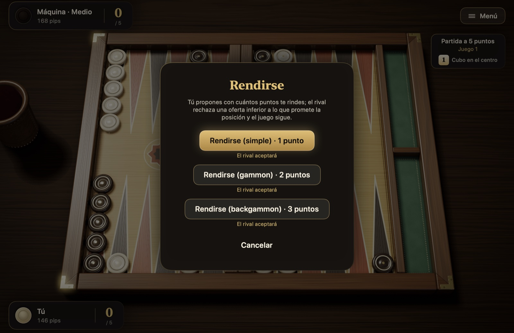
Figura 5.5La tarjeta Rendirse.
La máquina también puede rendirse por su cuenta en una carrera sin esperanza.
La sesión solo se puede elegir con las reglas internacionales; en el tavla turco no existe. Una sesión no tiene duración fijada: eres tú quien la termina, con «Terminar sesión». Si la terminas entre dos juegos, desde la tarjeta de fin de juego, la sesión acaba en el acto. Si quieres terminarla durante un juego, te rindes en el juego en curso; si el rival acepta, se anotan los puntos del juego y la sesión termina. El resultado de la sesión pasa al archivo y a las estadísticas.
5.6 Pausar y continuar la partida más tarde
El botón «Menú» de arriba a la derecha, o la tecla Esc, pone el juego en pausa; al pulsar Esc otra vez, el juego continúa. En la tarjeta de pausa están «Reanudar», «Ajustes», «Cómo jugar», «Historial de jugadas», «Partidas», «Rendirse» y «Salir de la partida».
Las partidas se guardan automáticamente. Con «Salir de la partida» puedes volver al menú principal y cerrar la aplicación; «Continuar», en el menú principal, abre la última partida donde la dejaste. Si tienes varias partidas, la tarjeta «Partidas» muestra las partidas en curso y el archivo de las terminadas. Con «Reanudar» vuelves a una partida en curso, con «Eliminar» quitas la que no quieras y con «Ver» vuelves a ver una partida terminada. En cada fila aparecen también el conjunto de reglas de la partida y las reglas opcionales activadas.
5.7 Fin del juego, análisis y estadísticas
Cuando termina el juego, una tarjeta muestra el resultado: los puntos ganados, el motivo del gammon o del backgammon, el marcador de la partida y un resumen del juego. El resumen incluye el tiempo de juego, la tirada media de cada jugador, la suerte con los dados y las pistas que has usado. Cuando termina la partida, el botón «Nueva partida» de la tarjeta empieza una partida nueva con tus últimas elecciones, sin abrir el panel; debajo del botón aparece un resumen de la partida que va a empezar.
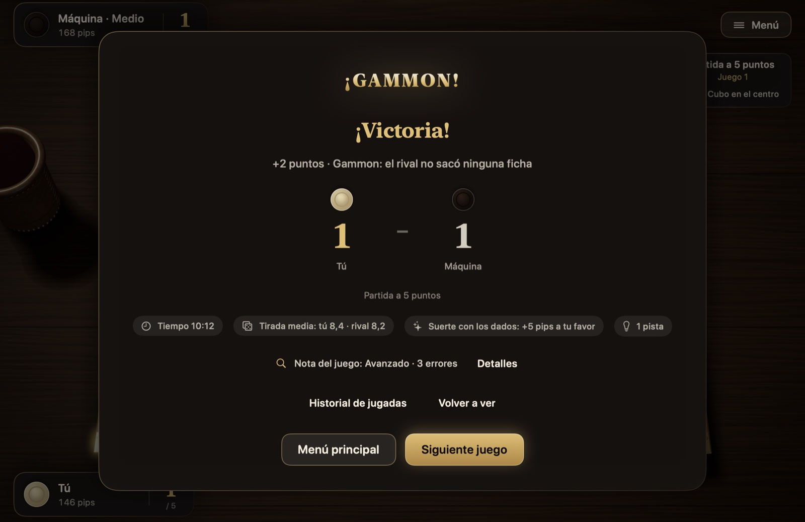
Figura 5.6La tarjeta de fin de juego.
La «Nota del juego», en el centro de la tarjeta, sale del análisis que hace el motor Maestro de tus decisiones en el juego; a su lado aparecen el PR aproximado y el número de errores. «Detalles» abre la tarjeta de análisis: las decisiones que te han costado más de 0,02 puntos frente a la mejor opción aparecen en una lista, con lo que jugaste y la opción mejor, una al lado de la otra. Las decisiones del cubo también se incluyen. Cuando termina la partida, se da también la nota de la partida.
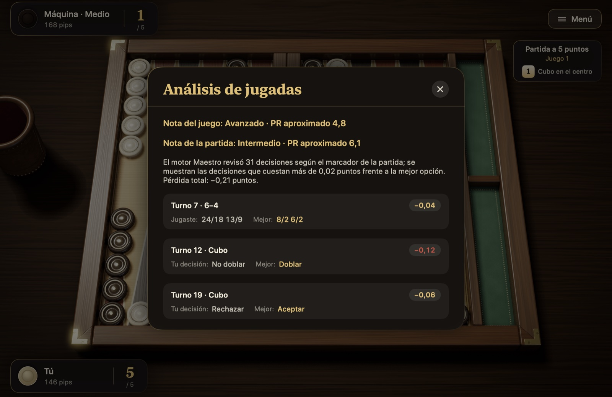
Figura 5.7Análisis de jugadas.
Con los botones de la parte inferior de la tarjeta de fin de juego abres el historial de jugadas, vuelves a ver el juego, regresas al menú principal o pasas al siguiente juego.
La tarjeta «Estadísticas» del menú principal muestra el número de partidas y de juegos ganados y jugados, el porcentaje de victorias, los gammons que has ganado y los que has concedido, tu mejor racha de victorias, los resultados por nivel, la distribución de los dados y las partidas recientes. Las sesiones jugadas y los puntos netos en sesiones se registran aparte. Con «Restablecer las estadísticas» empiezas de cero.
5.8 Historial de jugadas, repetición y exportación
«Historial de jugadas» (⌘L) muestra todos los turnos de ambos jugadores y también los dobles y las rendiciones. Si la partida tiene varios juegos, el juego se elige con los botones de arriba.
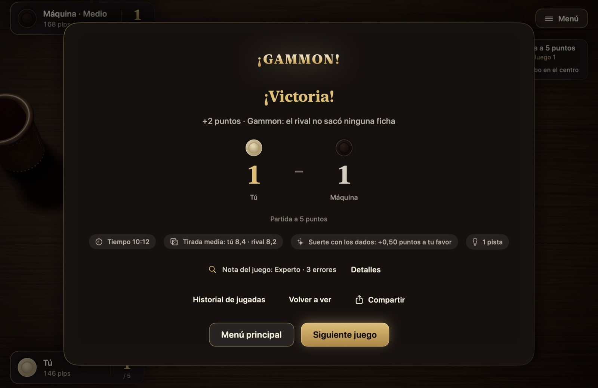
Figura 5.8Historial de jugadas. El historial de una sesión: filas de doble automático, turnos con sus dados, doble, beaver y aceptación.
Con «Volver a ver» puedes ver de nuevo desde el principio un juego terminado, con las animaciones reales: ← y → pasan de un turno a otro, y Espacio reproduce y detiene. «Exportar…» guarda el registro de la partida en tres formatos: texto legible (.txt), el formato .mat que leen Jellyfish y XG, y el formato .sgf de GNU Backgammon. Así puedes analizar tu partida también con esos programas.
5.9 Ajustes
A Ajustes se llega desde el menú principal o desde la tarjeta de pausa. Los cambios se aplican al instante.
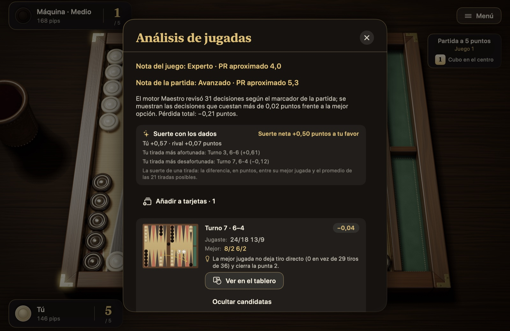
Figura 5.9Ajustes.
Sonido: Niveles independientes para los efectos de sonido, la música y el sonido de la lluvia en la ventana.
Juego: Fichas que se pueden mover, aros de destino, botones Pista y Deshacer, tirada automática, confirmación automática y movimientos forzados; los detalles, en el apartado 5.3. Las reglas no están en Ajustes: las dos reglas tradicionales del tavla turco se eligen en el panel Nueva partida.
Velocidad: La velocidad de las animaciones y el tiempo de reflexión del rival. Con «Cubilete» desactivado, los dados se tiran sin cubilete y la tirada es más rápida.
Apariencia: El tablero («Nogal clásico», «Nácar incrustado», «Arce»), las fichas («Boj y ébano», «Mármol y ónice», «Laca roja y negra»), los dados («Marfil», «Ébano», «Ámbar») y el tapete («Verde», «Burdeos», «Azul marino»). El estilo de las fichas y de los dados también cambia el sonido; además, los iconos de fichas de la pantalla adoptan los colores del estilo de fichas elegido. «Tablero interior a la izquierda» invierte el tablero, y las fichas se sacan hacia la izquierda. El tamaño del texto puede ser «Normal», «Grande» o «Muy grande».
Cámara: La cámara cinematográfica (acercamiento al empezar la partida y giro descendente al terminarla), el zoom y la inclinación de la cámara.
Idioma: Turco, inglés, francés, alemán, español, portugués e italiano. Con «Sistema» seleccionado, se usa el idioma del sistema.
5.10 Atajos de teclado
Todas las jugadas del tablero pueden hacerse solo con el teclado.
Tabla 5.1 Atajos de teclado
Tecla
Qué hace
Espacio
Tira los dados cuando hay una tirada pendiente; confirma el turno si la confirmación automática está desactivada
Retorno
Mueve la ficha al destino elegido con el teclado; confirma el turno si la confirmación automática está desactivada
Tab, ⇧Tab
Recorren las fichas que se pueden mover
Teclas de flecha
Recorren los destinos de la ficha seleccionada
Esc
Pone el juego en pausa y, al pulsarla de nuevo, lo reanuda; cierra una tarjeta abierta
⌘Z
Deshace el último paso; funciona cuando el botón «Deshacer» está activado
⌘I
Pista; funciona cuando el botón «Pista» está activado
⌘D
Dobla
⌘L
Abre el historial de jugadas
⌘N
Nueva partida; si hay una partida en curso, pregunta antes, también entre un juego y otro
⌘?
Abre la tarjeta «Cómo jugar»
← →
En la repetición, turno anterior y turno siguiente
5.11 Accesibilidad
Lector de pantalla: Se puede jugar en el tablero con VoiceOver. Las puntas, la barra, las fichas retiradas y los dados son elementos independientes; en cada uno se lee de quién son las fichas y cuántas hay, y si se puede mover, está seleccionado o es un destino. Tus dados, las jugadas del rival y las fichas comidas se anuncian en voz alta.
Reducción de movimiento: Si en macOS está activado «Reducir movimiento», se desactivan las animaciones de cámara, el balanceo y el paralaje del menú, el cubilete, los rebotes de las fichas y la lluvia dorada.
Contraste: Si en macOS está activado el ajuste «Aumentar contraste», los textos y las líneas de la interfaz se dibujan con más nitidez.
Tamaño del texto: En Ajustes puedes poner el texto en «Grande» o «Muy grande»; las tarjetas y los indicadores crecen en proporción.
Teclado: Todas las jugadas del tablero pueden hacerse con el teclado; las teclas están en la Tabla 5.1.
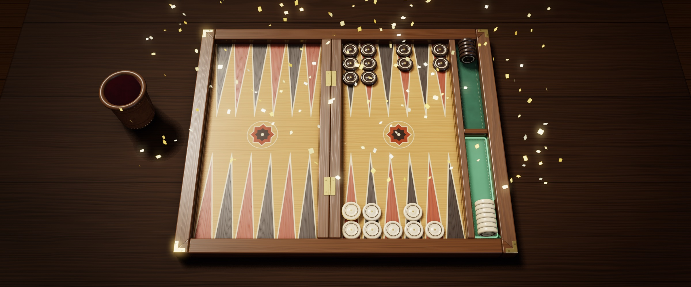
Capítulo 6
Consulta
Este capítulo es de consulta: preguntas frecuentes, glosario de términos e índice. La columna «Véase» de la tabla de términos lleva a los apartados en los que se explica cada término.
6.1 Preguntas frecuentes
Me han salido unos dados malos, ¿puedo pasar? No. Si los dados permiten alguna jugada, estás obligado a hacerla. Solo se pasa, y de forma automática, cuando no se puede jugar ningún dado.
¿Puedo mover una ficha del rival? No. Cada jugador mueve solo sus propias fichas.
Después de comer una ficha, ¿puedo seguir con la misma? Con la regla internacional, sí: comer no pone fin al viaje de la ficha, y puedes avanzarla con el dado que te queda. En el tavla turco habitual, en cambio, está prohibido comer y escapar en tu propio tablero interior. En Fichas y Dados, cuando juegas con las reglas turcas, esta prohibición se aplica si has elegido «Sin comer y escapar» al crear la partida; por defecto está desactivada.
¿Cuántas fichas caben como máximo en una punta? No hay límite. En una punta tuya puedes apilar tantas fichas como quieras.
¿Puedo empezar a sacar fichas si tengo una ficha comida? No. Para sacar fichas, todas tus fichas tienen que estar en tu tablero interior; una ficha en la barra cuenta como fuera del tablero interior.
¿Tengo que sumar los dos dados y jugarlos con una sola ficha? No. También puedes dar cada dado a una ficha distinta. Si los juegas con una sola ficha, la parada intermedia tiene que estar abierta.
¿Puede terminar un juego en empate? No. Como los jugadores juegan por turnos, uno de los dos termina siempre primero.
He tenido que deshacer un punto de mi tablero interior: ¿es un error? No siempre. A veces los dados no dejan otra opción; la regla del movimiento forzado está por encima de todo.
En Fichas y Dados he movido una ficha por error, ¿qué hago? Con los ajustes por defecto, un paso jugado no se puede deshacer. Para poder hacerlo, activa «Mostrar el botón Deshacer» en Ajustes; así puedes deshacer los pasos de ese turno hasta que termine. Mientras «Confirmar las jugadas automáticamente» está activada, el turno termina con el último paso; si también la desactivas, puedes deshacer hasta que pulses «Hecho».
¿Por qué ha subido de golpe mi conteo de pips? Porque te han comido una ficha. La ficha que va a la barra vuelve al principio del recorrido, así que tu conteo de pips aumenta en la distancia que esa ficha ha perdido.
6.2 Términos e índice
Tabla 6.1 Términos e índice
Término
Significado
Véase
Ancla
Punto de dos o más fichas que se mantiene en el tablero interior del rival
Si has llegado hasta aquí, ya conoces todas las reglas del backgammon, los planes básicos y cada rincón de Fichas y Dados. El resto se aprende en el tablero. Juega tus primeras partidas en el nivel «Fácil»; echa un vistazo al análisis de los juegos que pierdas para ver qué decisiones te han costado puntos, y después sube de nivel. Los dados unas veces te sonríen a ti y otras a tu rival; a la larga, la diferencia la marcan tus decisiones.
Desde hace cinco mil años, el backgammon sienta a la gente a ambos lados de una mesa. Espero que Fichas y Dados sea una pequeña aportación a esta tradición y que te haga pasar muy buenos ratos. Tus opiniones y sugerencias ayudan a mejorar la aplicación.